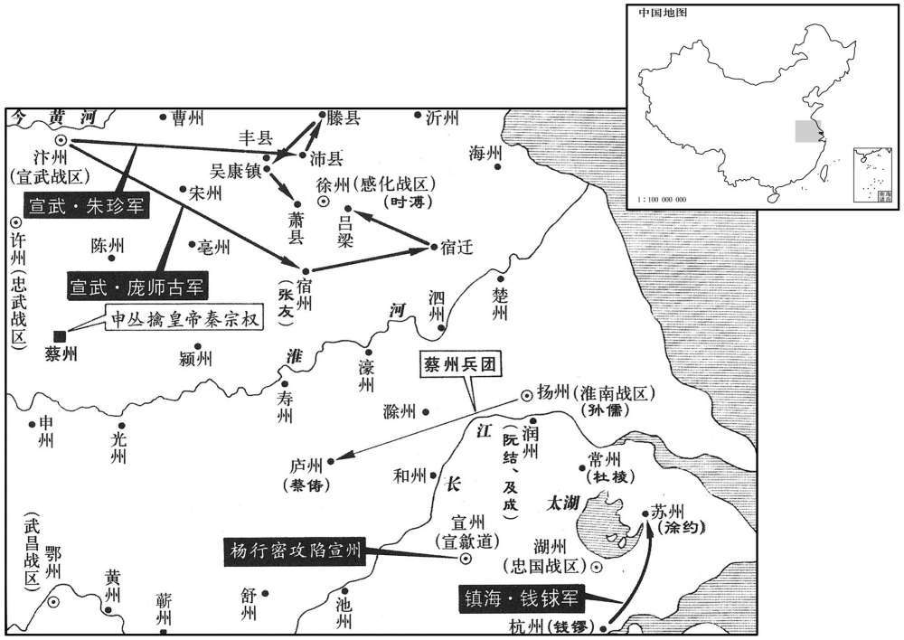
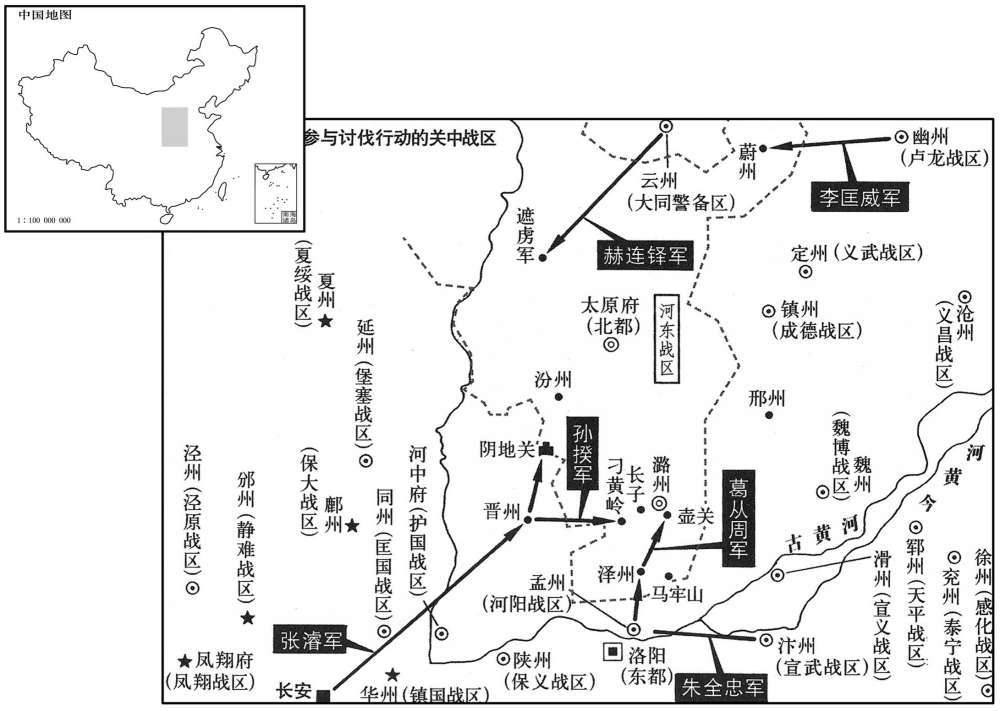
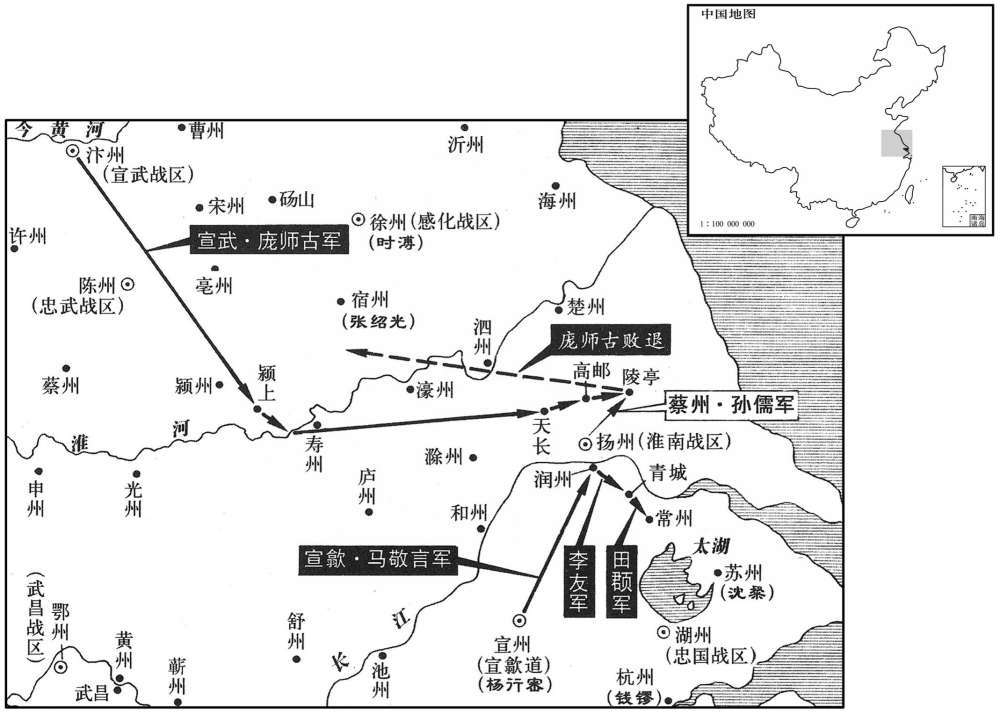
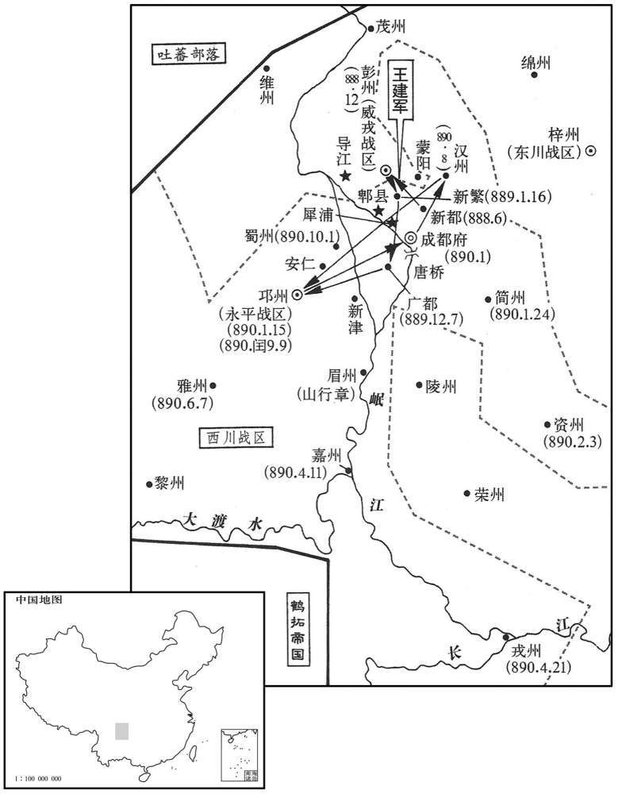
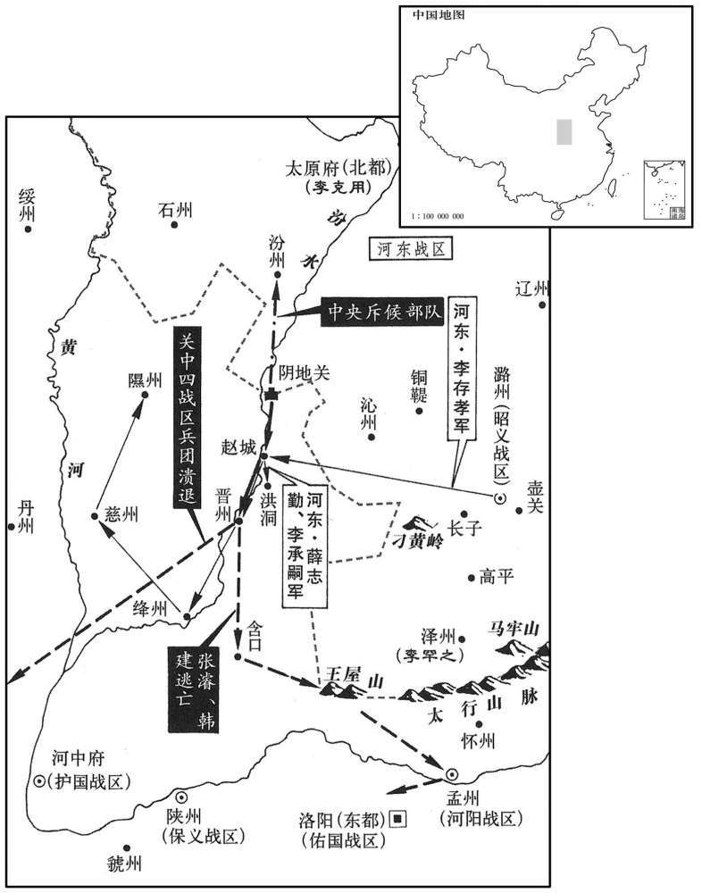
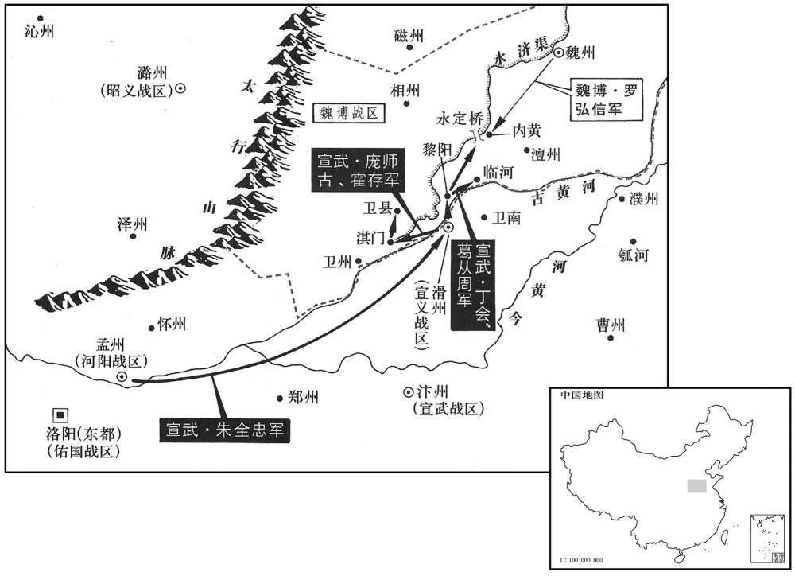
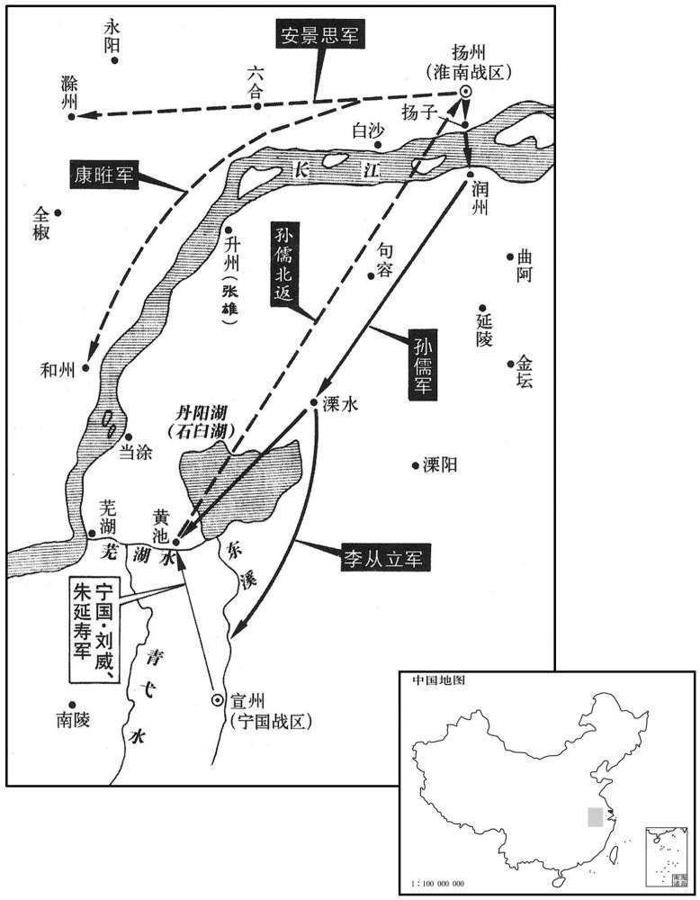
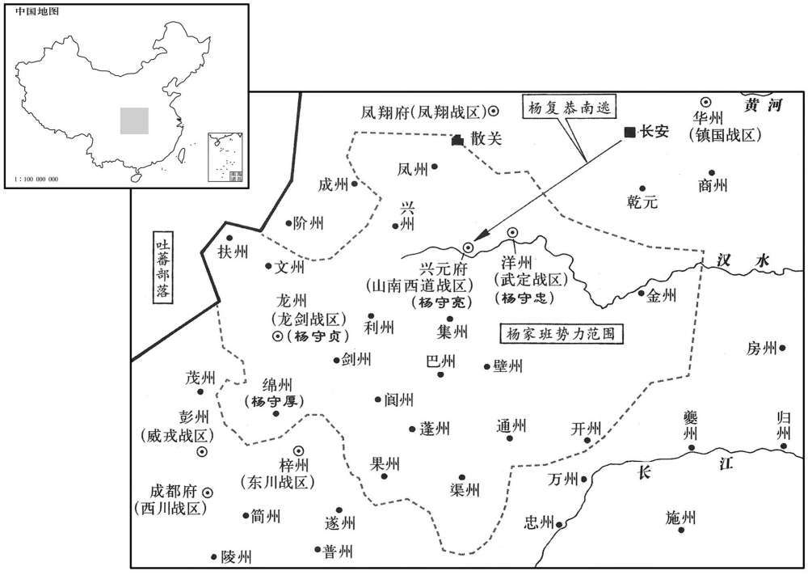
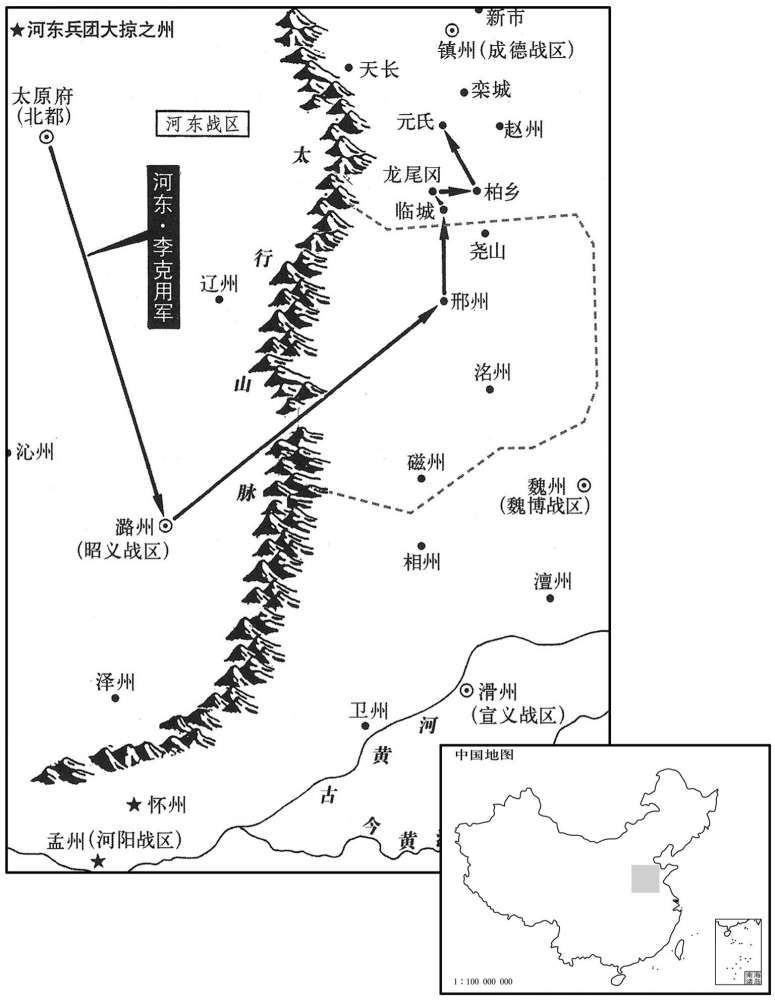

卷次与人物目录 / 卷258
资治通鉴 · 卷第二百五十八【唐纪七十四】
公元889年至公元891年 · 原文、白话与胡三省注
本页按胡注本编排保存全卷内容。白话采用本站所据译本，未可靠对应的内容另列说明；事件标题用于定位，并非原书文字。
本卷共129段原文，127段有译文对应，2段缺译或待核对。
卷第二百五十八【唐纪七十四】起屠维作噩（己酉），尽重光大渊献（辛亥），凡三年。
卷首原文与注释
昭宗圣穆景文孝皇帝上之上〔讳杰，懿宗第七子，及即位，改名敏，又改名晔。〕
公元889年 · 唐昭宗圣穆景文孝皇帝龙纪元年
龙纪元年〔（己酉、八八九）〕
上传原文的注释括号有异常，字符原样保留；无法可靠划分的段落默认全文显示。
本年事件索引（现代整理）
- 昭宗大赦天下，改元龙纪
- 刘崇望拜同平章事
- 庞师古攻取宿迁，时溥败退彭城
- 郭璠杀申丛并献秦宗权，朱全忠任郭璠留后
- 王建在新繁大败山行章，杨晟退守三交
- 朱全忠押送秦宗权至长安，秦宗权被斩于独柳
- 朱全忠加中书令并进封东平郡王
- 赵德諲加中书令，赵犨加同平章事后病卒
- 钱銶攻克苏州，徐约逃入海中而死
- 陕虢军获赐保义军号
- 阮结卒，钱镠命成及接掌润州
- 李克用攻下磁、洺二州，孟方立饮药自杀
- 杨行密攻围宣州，城中食尽，周进思夺权后献城投降
- 朱全忠派使者索取赵锽，杨行密依袁袭计杀赵锽
- 孙儒攻庐州，蔡俦献城投降
- 朱珍因杀李唐宾遭朱全忠处死
- 王敬武卒，王师范留后，张蟾迎崔安潜讨伐
- 杜孺休任苏州刺史，钱镠不满其任命
- 昭宗改名李晔
- 昭宗祭祀圜丘并大赦，宦官开始佩剑侍祠
- 昭宗厌恶杨复恭专权，与宰相商议抑制宦官
- 杨守立改赐姓名李顺节，掌禁军并加同平章事
- 朱全忠请领盐铁使，孔纬反对后作罢
- 田頵挖地道攻入常州，俘获杜棱
- 朱全忠遣庞师古率军攻打孙儒
- 王建击败山行章、宋行能，山行章请降
- 孙儒渡江驱逐田頵，攻取常州、润州
- 田令孜杀害刘巨容并诛灭其族
春，正月，癸巳朔，赦天下，改元。〔考异曰：唐年补录曰：「正月，癸巳，改文德二年为龙纪元年，百寮上帝徽号曰圣文睿德光武弘孝皇帝。」新、旧纪、实录，明年正月乃上尊号，补录误也。旧纪又云：「以剑南西川节度、两川招抚制置使韦招度为东都留守。」按昭度大顺二年乃为留守，旧纪误也。今皆从实录。〕
春季，正月，癸巳朔（初一），唐昭宗大赦天下，改年号为龙纪。
以翰林学士承旨、兵部侍郎刘崇望同平章事。
朝廷任命翰林学士承旨、兵部侍郎刘崇望为同平章事。
汴将庞师古拔宿迁，军于吕梁。〔九域志：除州彭城县有吕梁洪镇。〕时溥逆战，大败，还保彭城。
汴州军队将领庞师古攻克宿迁，在叶梁洪镇驻扎军队。时溥前去迎战，结果大败，退回彭城固守。
壬子，蔡将郭璠杀申丛，送秦宗权于汴，〔璠，孚袁翻。考异曰：实录：「申丛、裴涉欲复立宗权为帅，汴将李璠知之，斩丛、涉，以宗权送汴州。」薛居正五代史：「初，申丛缚宗权，折足而囚之，虽纳款于太祖，欲自献于长安以邀旄钺。及奸谋不就，乃欲复奉宗权以接取其柄，为其将郭璠所杀，絷宗权送于太祖，即以璠为留后。太祖遣都统判官韦震奏事，且疏时溥之罪，愿委讨伐，仍请降沧、兖二帅之命。」按全忠若自求兼领沧、兖二镇，则明年朝廷命兼领滑州，全忠犹辞不受，今岂敢遽求沧、兖邪！若为沧、兖二帅求之，则兖帅朱瑾，乃仇雠也。当时不知全忠欲以何人为沧帅，诸书皆无其名。薛史、实录皆云申丛欲复立宗权，按丛折宗权足而囚之，岂有复奉为帅之理！盖郭璠欲夺其功，诬之云尔。新、旧纪、五代纪、传皆云郭璠杀申丛，而实录云李璠，误也。李璠乃槛送宗权者。〕告朱全忠云：「丛谋复立宗权。」全忠以璠为淮西留后。〔朱全忠又并淮西以连襄、邓，其势愈盛矣。〕
壬子（二十日），蔡州军队将领郭杀死申丛，把秦宗权送到汴州，对朱全忠说：“申丛筹划再次拥立秦宗权。”朱全忠于是任命郭为淮西留后。
戊申，王建大破山行章于新繁，杀获近万人，行章仅以身免。杨晟惧，徙屯三交，行章屯蒙阳，与建相持。〔仪凤二年，分九陇、雒、什邡三县置蒙阳县，属彭州。九域志：在州东三十一里。宋白曰：县在蒙江之北，故曰蒙阳。〕
戊申（十六日），王建在新繁大败山行章，斩杀擒获将近一万人，山行章仅能逃脱性命。杨晟恐惧，便把军调到三交驻扎，山行章在阳驻扎，与王建相互对持。
二月，朱全忠送秦宗权至京师，斩于独柳。〔考异曰：旧纪：「二月己丑，汴州行军司马李璠监送秦宗权并妻赵氏以献，斩于独柳。」实录：「三月，全忠献宗权，斩于独柳。」新纪：「二月戊辰，朱全忠俘宗权以献。己丑，宗权伏诛。」按宗权正月离汴，不应三月始至长安；戊辰献俘，不应至己丑始伏诛。故但云二月。〕京兆尹孙揆监刑，〔监，古衔翻。〕宗权于槛车中引首谓揆曰：「当书察宗权岂反者邪﹖但输忠不效耳。」观者皆笑。揆，逖之族孙也。〔孙逖仕至刑部侍郎，揆五世从孙也。〕
二月，朱全忠把秦宗权送到京师长安，在独柳斩杀。京兆尹孙揆主持行刑，秦宗权在槛车里伸出脑袋对孙揆说：“尚书你察看我秦宗权难道是造反的人吗？只是献纳忠心没有功效罢了。”围观的人都笑了。孙揆是刑部侍郎孙逖的从孙。
三月，加朱全忠兼中书令，进爵东平郡王。〔考异曰：旧纪在四月，封东平郡王。薛居正五代史在三月，亦云封东平。今从实录，止加中书令。据考异，则「进爵东平郡王」六字合汰。然按旧书帝纪，光启元年，封全忠沛郡王。此时虽未进爵东平，固已封王矣。〔全忠既克蔡州，军势益盛。
本段缺少可靠对应白话，原文完整保留；未使用生成译文。
加奉国节度使赵德諲中书令，〔僖宗中和二年，以蔡州为奉国军，命秦宗权为节度使。文德元年，以襄州为忠义军，命赵德諲为节度使。宗权既亡，未尝以奉国节授人，赵德諲亦未尝兼奉国节，当改「奉国」为「忠义」。〕加蔡州节度使赵犨同平章事，充忠武节度使，以陈州为理所。〔忠武本治许州；赵犨，陈人也，又守陈有功，因徙治所于陈。犨，昌牛翻。〕会犨有疾，悉以军府事授其弟昶，表乞骸骨，诏以昶代为忠武节度使。未几，犨薨。〔几，居岂翻。考异曰：薛居正五代史赵犨传曰：「文德元年，蔡州平，朝廷议勋，犨检校司徒，充泰宁军节度使，又改授浙西节度使，不离宛丘，兼领二镇。龙纪元年，三月，又以平巢、蔡功，就加平章事，充忠武军节度使，仍以陈州为理所。犨一日念弟昶共立军功，乃下令尽以军州事付于昶，遂上表乞骸。后数月，寝疾卒。」昶传曰：「犨遥领泰宁军节度使，以昶为本州岛刺史。俄而犨有疾，遂以军州尽付于昶。诏授兵马留后，旋迁忠武军节度使，亦以陈州为理所。时宗权未灭，陈、蔡封疆相接，昶每选精锐深入蔡境，蔡贼虽众，终不能抗，以至宗权败焉。」上云「蔡州平，以犨为忠武节度使」，下云「昶为节度使，时宗权未灭」，自相违。今从犨传。〕
朝廷加封奉国节度使赵德为中书令，加封蔡州节度使赵为同平章事，充任忠武节度使，以陈州作为忠武节度使的任所。适逢赵忠有疾病，把节使司的军政事务全部交给他弟弟赵昶办理，自己上表请求辞掉官职返回故乡，于是唐昭宗颁发诏令任命赵昶代理忠武节度使。不久，赵死去。
丙申，钱銶〔【章：十二行本「銶」作「铢」；乙十一行本同。】〕拔苏州，〔去年冬，钱銶攻苏州，事见上卷。〕徐约亡入海而死。〔光启三年，徐约据苏州，今走死。〕钱镠以海昌都将沈粲权知苏州。
丙申（初五），钱攻克苏州，徐约逃入海上身亡。钱委任海昌都将沈粲暂代苏州刺史。
夏，四月，赐陕虢军号保义。〔陕，失冉翻。〕
夏季，四月，朝廷赐给陕虢军队名号保义。
五月，甲辰，润州制置使阮结卒，钱镠以静江都将成及代之。
五月，甲辰（十三日），润州制置使阮结死去，钱委任静江都将成及代任润州制置使。
李克用大发兵，遣李罕之、李存孝攻孟方立，六月，拔磁、洺二州。方立遣大将马溉、袁奉韬将兵数万拒之，战于琉璃陂，方立兵大败，二将皆为所擒，克用乘胜进攻邢州。方立性猜忌，诸将多怨，至是皆不为方立用，方立凓惧，饮药死。〔中和二年，孟方立据邢州。〕弟摄洺州刺史迁，素得士心，众奉之为留后，〔考异曰：实录：「克用以弟克修守潞，遣泽州刺史安金俊讨方立。方立因结诸镇救援，其将奚忠信攻辽州。克用复遣李罕之等急攻，方立将马溉出战，为罕之所擒。溉谓曰：『欲图邢州，当先取磁州。』及并帅围磁州，方立与奚忠信帅兵大战，军败，陷磁州，而方立单骑还邢州，忠信死焉。方立愧之，乃自图死。三军立其弟迁，求援汴州。朱全忠遣王虔裕赴之，镇州王镕遗克用书和解而退。」唐年补录：「方立有谋将石元佐为安金俊所获，金俊问之，元佐请攻磁州，破奚忠信，金俊乃杀之。方立果与忠信引兵入磁，金俊与之战，大败，忠信死，方立单骑入邢州，愧见父老，遂自裁。」薛居正五代史方立传：「六月，李存孝下洺、磁两郡，方立遣马溉、袁奉韬尽率其众逆战于琉璃陂，存孝击之，尽殪，生获马溉、奉韬。初，方立性苛急，恩不逮下，攻围累旬，夜自巡城慰谕，守陴者皆倨。方立知其不可，乃饮酖而卒。其从弟洺州刺史迁，素得士心，众乃推为留后，求援于汴。时梁祖方攻时溥，援兵不出。」按李罕之攻下磁州，进攻洺州，乃擒马溉。实录云「溉为罕之谋取磁州」，盖误以石元佐为溉也。又，奚忠信去年已为李克修所擒，乃云「与方立率兵大战」，亦误也。旧纪：「六月，邢、洺节度使孟方立卒，三军推其弟洺州刺史迁为留后，李克用出军攻之。」新纪：「六月，李克用寇邢州，昭义军节度使孟方立卒，其弟迁自称留后。」按唐年补录载王镕奏得邢洺大将等状，以「孟方立奄辞昭代，三军、百姓同以亲弟摄洺州刺史迁权知兵马留后事。」及新、旧纪、实录、薛史方立传皆云立其弟迁，唯太祖纪年录及薛史武皇纪云立其侄迁，恐误。今从诸书。〕求援于朱全忠。全忠假道于魏博，罗弘信不许；全忠乃遣大将王虔裕将精甲数百，间道入邢州共守。〔间，古苋翻。为孟迁执王虔裕降河东张本。〕
李克用大举发兵，派遣李罕之、李存孝攻打孟方立，六月，攻克磁州、州。孟方立派遣大将马溉、袁奉韬带领军队几万抗击，在琉璃陂展开激战，孟方立的军队大败，马溉、袁奉韬两位将领都被擒获，李克用乘胜进攻邢州。孟方立性情猜忌，属下将领大多怨恨，到这时都不肯为他效力，孟方立惭愧恐惧，服药自杀。孟方立的弟弟、摄理州刺史孟迁，一向深得士卒的拥护，大家尊奉他为昭义军留后。孟迁向朱全忠请求救援。朱全忠要借道经过魏博，罗弘信不准许；朱全忠于是派遣大将王虔裕带领精壮人马几百名，通过偏僻的小路进入邢州与孟迁共同防守。
杨行密围宣州，城中食尽，人相啖，指挥使周进思据城逐赵锽；锽将奔广陵，田頵追擒之。未几，城中执进思以降。〔几，居岂翻。降，户江翻。〕行密入宣州，诸将争取金帛，徐温独据米囷，为粥以食饿者。温，朐山人也。〔囷，去伦翻。仓圆曰囷。食，祥吏翻。徐温之远略已见于此矣。〕锽将宿松周本，勇冠军中，行密获而释之，以为裨将。〔宿松，汉皖县地，梁置高塘郡，隋废郡，置宿松县，唐属舒州。九域志：在州西南一百四十里。宋白曰：宿松县，汉元始中为松滋县，属庐江郡，晋武帝以荆州有松滋县，遂改为宿松。冠，古玩翻。〕锽既败，左右皆散，惟李德诚从锽不去，行密以宗女妻之。〔妻，七细翻。李德诚自此遂委质于杨氏。海陵让皇之世，此心复能如从锽之时乎﹖〕德诚，西华人也。行密表言于朝，诏以行密为宣歙观察使。〔朝，直遥翻。歙，书涉翻。〕
杨行密围攻宣州，城内粮食用光了，就相互残杀吃人肉充饥，指挥使周进思占据宣州城赶走赵；赵要逃奔广陵，被田追击擒获。不久，城内的军队捉拿周进思向杨行密投降。杨行密进入宣州城，各位将领争先恐后地抢夺金银布帛，唯独徐温占据粮仓，做粥给饥饿的人们吃。徐温是朐山人。赵的手下将领宿松县人周本，勇猛果敢在军营中堪称第一，杨行密抓获他后又将他释放，任命为裨将。赵失败时，身边的人都纷纷离去，只有李德诚跟随赵不走，杨行密把同族人的女儿嫁给李德诚为妻子来拉拢他。李德城是西华人。杨行密进呈表章向朝廷论政言事，昭宗颁发诏令任命杨行密为宣歙观察使。

朱全忠与赵锽有旧，遣使求之；行密谋于袁袭，袭曰：「不若斩首以遗之。」〔遗，唯季翻。〕行密从之。未几，袭卒，行密哭之曰：「天不欲成吾大功邪，何为折吾股肱也！〔折，而设翻。〕吾好宽而袭每劝我以杀，〔好，呼到翻。〕此其所以不寿与！」〔与，读曰欤。〕
朱全忠与赵早有交情，派遣使者向杨行密索要赵。杨行密和袁袭商量，袁袭说：“不如把赵砍掉脑袋去送给朱全忠。”杨行密依从了袁袭的意见。不久，袁袭死去，杨行密痛哭着说：“老天不想让我成就大的功业吗？为什么要折损我的得力助手！我喜好宽厚，可是袁袭常常劝说我斩杀，这大概是他不能长寿的原因吧！”
孙儒遣兵攻庐州，蔡俦以州降之。〔降，户江翻。〕
孙儒派遣军队攻打庐州，蔡俦向孙儒献城投降。
朱珍拔萧县，据之，与时溥相拒，朱全忠欲自往临之。珍命诸军皆葺马貛，李唐宾部将严郊独惰慢，军吏责之，唐宾怒，见珍诉之；珍亦怒，以唐宾为无礼，拔剑斩之，〔珍、唐宾交恶久矣，乘怒杀之，不复顾虑。〕遣骑白全忠，云唐宾谋叛。淮南左司马敬翔，死全忠乘怒，仓猝处置违宜，〔处，昌吕翻。〕故留使者，逮夜，然后从容白之，〔从，千容翻。朱全忠兼领淮南节度，以敬翔为左司马。逮夜而后言，则全忠虽怒而未能发其暴。〕全忠果大惊。翔因为画策，〔为，于伪翻；下为之同。〕诈收唐宾妻子系狱，遣骑往慰抚，全忠从之，军中始安。秋，七月，全忠如萧县，未至，珍出迎，命武士执之，责以专杀而诛之。〔敬翔为全忠谋取朱珍，犹用前计。〕诸将霍存等数十人叩头为之请，全忠怒，以床掷之，乃退。〔使全忠不杀朱珍，珍其肯为全忠用乎﹖霍存等为之请，弗思尔矣。为，于伪翻。〕丁未，至萧县，以庞师古代珍为都指挥使。八月，丙子，全忠进攻时溥壁，会大雨，引兵还。
朱珍攻克萧县，占据该县，与时溥相互抗拒，朱全忠想亲自前往指挥作战。朱珍命令各军都修盖马棚。唯有李唐宾的部将严郊懒惰怠慢，军中官吏斥责他，李唐宾很气愤，去谒见朱珍申诉。朱珍对此极其愤怒，认为李唐宾太无礼了，拔剑将李唐宾斩杀，派遣骑兵要去告诉朱全忠，说李唐宾图谋叛乱。淮南左司马敬翔，担心朱全忠会乘着怒气仓促处理，免不了失当欠妥，所以把朱珍派来的使者留下，到了夜晚之后，才从容不迫地把这件事告诉朱全忠，朱全忠大为震惊。敬翔趁机为朱全忠筹划计策，假装逮捕李唐宾的妻子、孩子拘禁在监狱，派遣骑兵前往慰问安抚，朱全忠依从敬翔的安排，军营上下才安定下来。秋季，七月，朱全忠前往萧县，还未到达，朱珍出城迎接，朱全忠命令武士将朱珍拿下，以擅自杀人罪要将他处死。霍存等几十位将领跪下磕头为朱珍求情，朱全忠很恼怒，用坐卧器具投打他们，这些将领才退去。丁未（十七日）朱全忠到达萧县，他任命庞师古代替朱珍做都指挥使。八月，丙子（十七日），朱全忠进攻时溥的营垒，适逢天下大雨，又带领军队返回萧县。
冬，十月，平卢节度使王敬武薨；子师范，年十六，军中推为留后，棣州刺史张蟾不从。诏以太子少帅崔安潜兼侍中，充平卢节度使。蟾迎安潜至州，与之共讨师范。〔为王师范杀张蟾张本。〕
冬季，十月，平卢节度使王敬武死去；儿子王师范，年龄仅十六岁，军中将士推举他做平卢留后，棣州刺史张蟾拒不服从。昭宗颁发诏令任命太子少师崔安潜兼任侍中，充任平卢节度使。张蟾把崔安潜迎接到棣州，和他一起筹商讨代王师范。
以给事中杜孺休为苏州刺史。钱镠不悦，以知州事沈粲为制置指挥使。〔沈粲制其兵权，杜孺休直寄坐耳。〕
朝廷任命给事中杜孺休为苏州刺史。钱对此很不高兴，委任主持苏州事宜的沈粲为制置指挥使。
十一月，上改名晔。
十一月，昭宗改名为李晔。
上将祀圜丘。故事，中尉枢密皆纃衫侍从；僖宗之世，已具襕笏；〔纃，睽桂翻，衣裾分也。襕，音阑，即今之袍也。下施横幅，因谓之襕。新志曰：唐初士人以棠苎襕衫为上服，贵女功之始也。一命以黄，再命以黑，王命以纁，四命以绿，五命以紫。中书令马周上议：礼无服衫之文，三代之制有深衣；请加襕袖褾纐，为士人上服；间骻者为缺骻衫，庶人服之。长孙无忌又议，服袍者下加襕，绯紫皆视其品。从，才用翻。〕至是，又令有司制法服，〔法服，谓冕服剑佩也。〕孔纬及谏官、礼官皆以为不可，上出手札谕之曰：「卿等所论至当。〔当，丁浪翻。〕事有从权，勿以小瑕遂妨大礼。」于是宦官始服剑佩侍祠。〔考异曰：按田令孜、杨复恭虽威权震主，官不过金吾卫上将军，则其余宦官必卑矣，但诸书不见当时宦官所欲衣者何品秩之法服也。〕己酉，祀圜丘，赦天下。
昭宗要去祭坛祭天。按照旧例，朝廷中的中尉、枢密都要身穿大襟分开的衣衫侍奉跟随皇帝。僖宗时代，已经具备了袍服和朝笏，到这时，昭宗又命令有关官吏制做礼服，孔纬和谏官、礼官都认为不适当。唐昭宗传出亲手写的谕令对他们说：“你们所谈论的很得当。办事应当权宜处理，不能因为微小的不当而妨碍了朝廷的大礼。”于是，宦官开始身穿法服佩剑侍奉皇帝祭礼。己酉（二十一日），唐昭宗赴祭坛祭天，大赦天下。
上在藩邸，素疾宦官，及即位，杨复恭恃援立功，〔援立见上卷上年。〕所为多不法，上意不平；政事多谋于宰相，孔纬、张浚劝上举大中故事抑宦者权。复恭常乘肩舆至太极殿。〔太极殿，西内前殿也。〕他日，上与宰相言及方反者，孔纬曰：「陛下左右有将反者，况四方乎！」上矍然问之，纬指复恭曰：「复恭陛下家奴，乃肩舆造前殿，〔矍，居缚翻。造，七到翻。〕多养壮士为假子，使典禁兵，或为方镇，非反而何！」〔杨复恭以假子守立为天威军使，守信为玉山军使，守贞为龙剑节度，守忠为武定节度，守厚为绵州刺史，其余假子为州刺史者甚众，号外宅郎君。又养子六百人，监诸道军。〕复恭曰：「子壮士，欲以收士心，卫国家，岂反邪！」上曰：「卿欲卫国家，何不吏姓李而姓杨乎﹖」复恭无以对。
昭宗身为寿王居住藩邸时，一向憎恨宦官，到了他登基称帝以后，杨复恭倚仗着当初拥立昭宗即位有功，所做所为大多违犯法度，昭宗在心中对他愤愤不平。有关朝政事务，昭宗大多和宰相商讨，孔纬、张浚奉劝皇帝施行内宫以往的成例，抑制宦官的权力。杨复恭经常乘坐轿子到太极殿。有一天，昭宗与宰相谈率四方谋反叛乱的人，孔纬说：“陛下的身边就有将要谋反的人，何四方呢！”昭宗惊惶地追问他，孔纬指着杨复恭说：“杨复恭是陛下的家奴，竟敢乘坐轿子到前殿，招养许多壮士为养子，委任他们统管朝廷的军队，有的则充任地方节度使、刺史，这不是谋反是什么！”杨复恭辩解说：“我招养壮士为义子，是想收拢将士的心，保卫国家，哪里是谋反呀！”昭宗说：“你想保卫国家，为什么不让这些壮士姓李而姓杨？”杨复恭无话可答。
复恭假子天威军使杨守立，本姓胡，名弘立，勇冠六军，〔冠，古玩翻。〕人皆畏之。上欲讨复恭，恐守立作乱，谓复恭：「朕欲得卿胡子在左右。」复恭见守立于上，〔见，贤遍翻。〕上赐姓名李顺节，使掌六军管钥，〔北军六军，皆分屯苑中，屯营各有门，晨夕启闭。〕不期年，擢至天武都头，领镇海节度使，俄加同平章事。〔天武亦神策五十四都之一。期，读曰翆。〕及谢日，台吏申请班见百僚，孔纬判不集；〔判台申，不使集百官。〕顺节至中书，色不悦。他日，语微及之，纬曰：「宰相师长百僚，〔长，知两翻。〕故有班见。相公职为都头，而于政事堂班见百僚，于意安乎﹖」顺节不敢复言。〔复，扶又翻。〕
杨复恭的养子天威军使杨守立，本来姓胡，名叫弘立，以其勇猛果敢在朝廷的军队中闻名，人们对他都很畏惧。昭宗想要整治杨复恭，担心杨守立兴兵作乱，便对杨复恭说：“朕想把你的养子杨守立留在朕的身边。”杨复恭把杨守立引见给昭宗，昭宗赏赐给他新的姓名李顺节，派令他掌管朝廷军队各屯营营门的启闭，不到一年，提升为神策军的天武都头，兼任镇海节度使，不久又加封同平章事。等到谢恩的日子，御史大夫请求朝中百官排班拜见李顺节，孔纬裁决不准召集朝中百官。李顺节到中书省，脸色显得很不高兴。有天，孔纬在和李顺节的言谈中委婉地涉及到这件事，孔纬说：“宰相是朝中百官的师长，所以有百官排班拜见。你的官职是神策军的天武都头，而在政事堂上让百官排班拜见，能心安吗？”李顺节不敢再说。
朱全忠求领盐铁，孔纬独执以为不可，谓进奏吏曰：「朱公须此职，非兴兵不可！」全忠乃止。〔史言孔纬相唐，欲振纪纲，惜制于时，不得行其志耳。〕
朱全忠请求兼任盐铁转运使，唯独孔纬坚持认为不可以，他对进奏官吏说：“朱全忠想要盐铁使这一职，除非他兴兵来抢不可！”朱全忠这才停止索求该职。
田頵攻常州，为地道入城；中宵，旌旗甲兵出于制置使杜棱之寝室，遂虏之，以兵三万戍常州。
田攻打常州，挖凿地道进城；半夜时分，田的旌旗甲兵出现在制置使杜棱的寝室，将杜棱俘获，田派令三万军队驻扎常州。
朱全忠遣庞师古将兵自颍上趋淮南，击孙儒。〔宋侨置楼烦县于汝阴郡界，后魏以县为下蔡郡治所，后齐废郡，隋改为颍上县，唐属颍州。九域志：在州东一百一十七里。趋，七喻翻。〕
朱全忠派遣庞师古带领军队从颍上县赶赴淮南，攻打孙儒。
十二月，甲子，王建败山行辛及西川骑将宋行能于广都；〔败，补迈翻。〕行能奔还成都，行章退守眉州。壬申，行章请降于建。
十二月，甲子（初七），王建在广都打败山行章及西川骑兵将领宋行能；宋行能逃回成都，山行章退到眉州固守。壬申（十五日），山行章向王建请求投降。
戊寅，孙儒自广陵引兵渡江，壬午，逐田頵，取常州，以刘建锋守之。儒还广陵，建锋又逐成及，取润州。〔成及为钱镠守润州。〕
戊寅（二十一日），孙儒从广陵带领军队渡过长江，壬午（二十五日），孙儒赶走田，占据常州，委任刘建锋守卫常州。孙儒返回广陵，刘建锋又驱逐成及，占据润州。
前山南东道节度使刘巨容之在襄阳也，有申屠生教之烧药为黄金。田令孜之弟过襄阳，巨容出金示之。及寓居成都，〔中和四年，巨容自襄阳奔成都。〕令孜求其方，不与，恨之，是岁，令孜杀巨容，灭其族。
从前山南东道节度使刘巨容在襄阳时，有个叫申屠生的人教他烧炼药物制做黄金。田令孜的弟弟经过襄阳，刘巨容拿出烧炼的黄金给他看。等到刘巨容到成都住下，田令孜向他索求炼金秘方，刘巨容不给，田令孜于是衔恨，这一年，田令孜杀刘巨容，并且灭了他的家族。
译本中未与胡注本可靠对应的内容
以下另列供核对版本差异，不并入胡注本正文。
译本所附古文
[7]三月，加朱全忠兼中书令，进爵东平郡王。全忠既克蔡州，军势益盛。
译本白话
三月，朝廷加封朱全忠兼任中书令，晋升爵位为东平郡王。朱全忠攻克蔡州以后，军队的势力更加强大起来。
译本所附古文
[16]杨行密遣马步都虞候田等攻常州。
译本白话
杨行密派遣马步都虞候田攻打常州。
公元890年 · 唐昭宗圣穆景文孝皇帝大顺元年
大顺元年〔（庚戍、八九○）〕
上传原文的注释括号有异常，字符原样保留；无法可靠划分的段落默认全文显示。
本年事件索引（现代整理）
- 昭宗受上尊号，改元大顺
- 李克用急攻邢州，孟迁粮尽后降唐
- 王儒率众投降王建，被王建收为养子并改名
- 陈敬瑄征发民众挖壕运料，严密守卫成都周边
- 韦昭度驻唐桥，王建驻阊门外，两军约束严整
- 杜有迁拘执简州刺史员虔嵩，献城归附王建
- 庞师古率兵渡淮，攻下天长与高邮
- 侯元绰执资州刺史杨戡投降王建
- 朱全忠加守中书令
- 孙儒在陵亭击败庞师古
- 杨行密遣马敬言袭取润州，诸将又击败刘建锋
- 李克用攻云州不克，援军到来后退还
- 时溥向李克用求援，李克用遣石君和率骑兵赴徐州
- 李克用鞭责李克修，李克修病卒，李克恭接任昭义留后
- 宣歙军获赐宁国军号，杨行密任节度使
- 张筠驱逐宿州刺史归附时溥，朱全忠派兵讨伐
- 任从海援救邛州失败，朱实与文武坚分别献嘉、戎二州
- 赫连铎、李匡威上表请求朝廷出兵讨李克用
- 张浚依附宦官起家，与杨复恭交恶后受昭宗倚重
- 昭宗询问治乱之道，张浚建议扩军强化朝廷
- 张浚力主征讨李克用，昭宗命三省及御史台议决后出兵
- 朝廷削夺李克用官爵属籍，任张浚统军讨伐
- 牛徽拒绝任行营判官，认为兴兵讨李克用将导致祸乱
- 李克恭骄纵失军心，潞州军将领怨惧
- 安居受作乱杀李克恭，冯霸入据潞州自称留后
- 朝廷听闻李克恭被杀后称贺，朱崇节入潞州权留后
- 张浚率五万军队出京讨李克用，昭宗登楼送行
- 朝廷削李罕之官爵，任孙揆为昭义节度使兼招讨副使
- 李继昌援救成都被王建击杀，谢从本献雅州降王建
- 孙儒求和获授淮南节度使，朱全忠旋即杀其使者
- 卢彦威获任义昌节度使
- 张浚会合多镇兵马于晋州
- 义成军改号宣义，朱全忠兼领两镇后因路远辞任
- 张浚率官军抵阴地关，葛从周潜入潞州，汴军又援泽州
- 李存孝伏击擒获孙揆，孙揆拒降被锯杀
- 孙儒攻打润州
- 钱镠遣沈粲杀苏州刺史杜孺休，李友夺取苏州
- 王建退守汉州
- 陈敬瑄设征督院，严刑逼迫富户出资供军
- 李罕之向李克用求援，李克用派李存孝率骑兵救援
- 李存孝击退汴军援兵，葛从周弃守潞州
- 李克用任康君立为昭义留后，李存孝因未获任用而怨愤
- 李匡威、赫连铎攻蔚州及遮虏军，李克用击败二镇援军
- 李嗣源沉稳寡言，称自己只以行动击贼
- 孙儒攻取常州，杀张行周并围攻苏州
- 任可知斩毛湘、携邛州降王建，王建入城安抚百姓
- 张浚讨伐李克用兵败，李存孝乘胜攻取晋、绛二州
- 李克用上表控诉张浚讨伐，张浚兵败逃过黄河
- 朝廷依赖朱全忠及河朔三镇讨伐李克用，援兵不足致败
- 孙儒攻克苏州并杀李友，田頵等焚润州撤退
- 朱全忠派兵攻魏博，夺取黎阳、临河等地
- 上元县升置升州，张雄任刺史
春，正月，戊子朔，群臣上尊号曰圣文睿德光武弘孝皇帝；改元。〔上，时掌翻。〕
春季，正月，戊子朔（初一），朝中文武群臣为昭宗上尊号为圣文睿德光武弘孝皇帝，改年号为大顺。
李克用急攻邢州，孟迁食竭力尽，执王虔，裕及汴兵以降。〔僖宗中和二年，孟方立据邢、磁、洺三州，至是而亡。考异曰：唐末见闻录：「龙纪元年，大军守破邢州城，孟迁投来，拜李存孝邢州刺史。十一月，四日，孟迁补充教练使。」太祖纪年录及薛居正五代史太祖纪，皆曰「大顺元年，李存孝攻邢州急，邢帅孟迁以邢、洺、磁三州归于我，执朱温之将王虔裕等三百人以献」，而无月。太祖纪年录又曰：「太祖徙孟迁于太原，以大将安金俊为邢洺团练使。」薛史孟迁传曰：「大顺元年，二月，迁执王虔裕等乞降，武皇令安金俊代之。」今从实录。薛史虔裕传曰：「时太祖大军方讨兖、郓，未及救援，邢人困而携贰，迁乃絷虔裕送于太原，寻为所杀。」按是时全忠方攻时溥，未讨兖、郓也。虔裕传误。〕克用以安金俊为邢洺团练使。
李克用猛烈攻打邢州，孟迁粮食吃尽兵力疲惫，抓住王虔裕，带着汴州军队向李克用投降。李克用任命安金俊为邢团练使。
壬寅，王建攻邛州，〔邛，渠容翻。〕陈敬瑄遣其大将彭城杨儒将兵三千助刺史毛湘守之，湘出战，屡败。杨儒登城，见建兵盛，叹曰：「唐祚尽矣，王公治众，严而不残，殆可以庇民乎！」〔治，直之翻。〕遂帅所部出降。〔帅，读曰率。降，户江翻。〕建养以为子，更甚姓名曰王宗儒。〔更，工衡翻。〕乙巳，建留永平节度判官张琳为邛南招安使，引兵还成都。〔复攻陈敬瑄也。〕琳，许州人也。
壬寅（十五日），王建攻打邛州，陈敬派遣属下大将彭城人杨儒带领军队三千援助邛州刺史毛湘守城，毛湘出城作战，多次败阵。杨儒登上城楼，看见王建的军队声势浩大，叹息着说道：“大唐气数已到了尽头，王建治理民众，严厉而不残暴，大概可以庇护老百姓！”于是，杨儒率领所部人马出城向王建投降。王建收养杨儒为了义子，改其姓名叫王宗儒。乙巳（十八日），王建留下永平节度判官张琳为邛南招安使，带领军队返回成都。张琳是许州人。
陈敬瑄分兵布寨于犀浦、郫、导江等县，〔垂拱二年，分成都县置犀浦县。郫，汉古县，唐并属成都府。九域志：郫县在府西四十五里。〕发城中民户一丁，〔不计其家丁数多少，一户则发一丁。〕昼则穿重壕，采竹木运砖石，〔重，直龙翻。史照曰：古史考：乌曹作砖。〕夜则登城，击柝巡警，无休息。
陈敬在犀浦县、郫县、导江县等地分别安设营寨，对城内居住的百姓一户征发一名壮丁，白天挖掘重重堑壕，采伐竹木，运送砖头石块，夜里则登上城墙，打柝巡夜，从无休息。
韦召度营于唐桥，王建营于阊门外；建事昭度甚谨。
韦昭度在唐桥安设军营，王建在东阊门外安设军营。王建侍奉韦昭度相当谨慎。
辛亥，简州将杜有迁执刺史员虔嵩降于建，〔员，音云，又音运，姓也。〕建以有迁知州事。
辛亥（二十四日），简州将领杜有迁抓获刺史员虔嵩向王建投降，王建委任杜有迁掌管简州事务。
汴将庞师古等众号十万，渡淮，声言救杨行密，攻下天长，壬子，下高邮。〔下者，降下。〕
汴州军队将领庞师古等人的军队号称十万，渡过淮河，扬言要救杨行密，攻下天长县，壬子（二十五日），攻克高邮。
二月，己，未资州将侯元绰执刺史杨戡降于王建，建以元绰知州事。
二月，己未（初三），资州将领侯元绰抓住刺史杨戡向王建投降，王建委任侯元绰掌管资州事务。
乙丑，加朱全忠守中书令。
乙丑（初九），朝廷加封朱全忠兼理中书令。
庞师古引兵深入淮南，己巳，与孙儒战于陵亭，〔九域志：泰州兴化县有陵亭镇。〕师古兵败而还。〔还，从宣翻，又如字。〕
庞师古带领军队深入淮南，己巳（十三日），与孙儒在陵亭镇展开激战，庞师古的军队失利而返回。
杨行密遣其将马敬言将兵五千，乘虚袭据润州。李友将兵二万屯青城，将攻常州。安仁义、刘威、田頵败刘建锋于武进，〔去年，孙儒使刘建锋据常、润。晋分曲阿县置武进县，梁改为兰陵，隋废，唐垂拱二年，又分晋陵置武进县，属常州。九域志，县有青城镇。〕敬言、仁义、威屯润州。友，合肥人；威，慎县人也。
杨行密派遣属下将领马敬言率领军队五千，乘虚攻打并占据了润州。李友带领军队二万驻扎青城，要攻打常州。安仁义、刘威、田在武进县打败刘建锋。马敬言、安仁义、刘威于是驻扎润州。李友是合肥人；刘威是慎县人。
李克用将兵攻云州防御使赫连铎，克其东城。铎求救于卢龙节度使李匡威，匡威将兵三万赴之。丙子，邢洺团练使安金俊中流矢死，〔中，竹仲翻。考异曰：实录：「四月，丙辰朔，李克用遣安金俊率师攻云州，赫连铎求援于幽州李匡威，匡威出师赴之，战于蔚州，太原府军大败，燕师执金俊，献于朝。」据太祖纪年录，攻云州在三月。旧纪、实录皆在四月，恐是约奏到。然纪年录不言克用败，盖讳之也。今从唐末见闻录。又纪年录、唐末见闻录皆云金俊战死。实录云执献之，亦误。〕河东万胜军使申信叛降于铎。会幽州军至，克用引还。
李克用带领军队攻打云州防御使赫连铎，攻克云州东城。赫连铎向卢龙节度使李匡威请求救援，李匡威带领军队三万赶赴云州。丙子（二十日），李克用的将领邢团练使安金俊在激战中被乱飞的箭击中身亡，河东万胜军使申信向赫连铎投降。又恰有幽州的军队赶来，李克用便率领人马返回。
时溥求救于河东，李克用遣其将石君和将五百骑赴之。
时溥向河东节度使李克用求救，李克用派遣属下将领石君和带领五骑兵前去救援。

李克用巡潞州，以供具不厚，怒昭义节度使李克修，诟而笞之；〔诟，古候翻，又许候翻。〕克修凓愤成疾，三月，薨。〔考异曰：太祖纪年录：「太祖遣李罕之、李存孝攻邢州。十月，且命班师，由上党而归。克修性吝啬，太祖左右征赂于克修，旬日间，费收十万，尚以为供张不丰，掎其事，笞克修而归太原。俄而克修愤耻寝疾。「薛史克修传曰：「龙纪元年，武皇大举以伐邢洺，及班师，因抚封于上党。」按太祖纪但遣罕之、存孝攻邢州，不云亲行。盖罕之、存孝围邢州，克用但以大军屯境上为之声援，去十月先还，罕之、存孝犹围邢州，故正月孟迁降也。〕克用表其弟决胜军使克恭为昭义留后。〔为潞州叛克用张本。〕
李克用巡视潞州，因为供给的酒食等用品不够丰厚，便对昭义节度使李克很恼怒，将他辱骂并笞打一顿。李克羞愧怨愤以致身患重病，三月，便死去了。李克用上呈表章，任命他的弟弟决胜军使李克恭为昭义留后。
赐宣歙军号宁国，以杨行密为节度使。
唐昭宗赐宣歙军名号为宁国，任命杨行密为节度使。
夏，四月，宿州将张筠逐刺史张绍光，附于时溥；〔去年朱全忠取宿州。〕朱全忠帅诸军讨之。〔帅，读曰率。〕溥出兵掠砀山，〔砀，徒郎翻。〕全忠遣牙内都指挥使朱友裕击之，杀三千余人，擒石君和。〔考异曰：郗象梁太祖实录，前云四月丙辰，后云乙卯溥出兵。按长历，乙卯，四月晦日。实录误也。〕友裕，全忠之子也。
夏季，四月，宿州将领张筠驱逐刺史张绍光，归附时溥。朱全忠率领各地军队讨伐张筠。时溥派出军队到砀山一带抢劫，朱全忠派遣牙内都指挥使朱友裕攻打时溥的军队，杀死三千余人，擒获石君和。朱友裕是朱全忠的儿子。
乙丑，陈敬瑄遣蜀州刺史任从海将兵二万救邛州，战败，欲以蜀州降王建；敬瑄杀之，〔任，音壬。〕以徐公鉥代为蜀州刺史。〔鉥，时橘翻。〕丙寅，嘉州刺史朱实举州降于建。丙子，僰道土豪文武坚执戎州刺史谢承恩降于建。〔僰道，故僰侯国，汉立县，为犍为郡治所，梁置戎州。僰，蒲北翻。〕
乙丑（初十），陈敬派遗蜀州刺史任从海带领军队二万救援邛州，结果被打败，任从海便想献出蜀州向王建投降。陈敬杀掉任从海，任命徐公代理蜀州刺史。丙寅（十一日），嘉州刺史朱实献出全州向王建投降。丙子（二十一日），道土豪文武坚抓获戎州刺史谢承恩向王建投降。
赫连铎、李匡威表请讨李克用。〔乘其不利也。〕朱全忠亦上言：「克用终为国患，今因其败，臣请帅汴、滑、孟三军，〔汴、滑、孟三镇，时皆属全忠。帅，读曰率。〕与河北三镇共除之。〔河北三镇，谓卢龙李匡威、成德王镕、魏博罗弘信。〕乞朝廷命大臣为统帅。」〔帅，所类翻。〕
赫连铎、李匡威进呈表章请求讨伐李克用。朱全忠也向朝廷进言说：“李克用最终是国家祸患，现在趁着他势力衰败，我请求率领汴州、滑州、孟州三路军队，和河北的三镇人马一起去除掉李克用。恳望朝廷任命大臣充任统帅。”
初，张浚因杨复恭以进，〔事见二百五十四卷僖宗广明元年。〕复恭中废，更附田令孜而薄复恭。〔更，工衡翻，改也。附令孜事见中和元年。〕及复恭再用事，深恨之。〔襄王熅之乱，田令孜往依陈敬瑄，自是之后，复恭再用事。〕上知浚与复恭有隙，特亲倚之；〔考异曰：旧传：「再幸山南，复恭代令孜为中尉，罢浚知政事。昭宗初在藩邸，深疾宦官，复恭有援立大勋，恃恩任事，上心不平之。当时趋向者多言浚有方略，能画大计，复用为宰相，判度支。」据旧纪、实录、新纪、表，浚自光启三年九月拜平章事，至大顺二年兵败坐贬，中间未尝罢免。旧传误也。今从新传。〕浚亦以功名为己任，每自比谢安、裴度。克用之讨黄巢屯河中也，〔见二百五十五卷僖宗中和二十三年。〕浚为都统判官。〔王铎为都统，张浚为判官。〕克用薄其为人，闻其作相，私谓诏使曰：「张公好虚谈而无实用，〔好，呼到翻。〕倾覆之士也。主上采其名而用之，他日交乱天下，必是人也。」浚闻而衔之。
当初，张浚凭借杨复恭的势力得以晋升，杨复恭后来失宠，张浚便又去依附田令孜而疏了杨复恭。等到杨复恭再次当权，他对张浚深怀忌恨。唐昭宗知道张浚与杨复恭有怨仇，便格外地亲近倚重张浚；张浚也把已有的功名成是自己所能胜任的，常常把自己比作谢安、裴度。李克用讨代黄巢驻扎在河中时，张浚充任都统判官。李克用蔑视张浚的为人，听说他做了宰相，私下对传达诏令的使臣说：“张浚喜好空谈而不能务实办事，是个颠覆朝廷的人，皇上听信他的虚名而重用他，将来有一天导致天下大乱的，一定是这个人。”张浚听到这些，对李克用怀恨在心。
上从容与浚论古今治乱，〔从，千容翻。〕浚曰：「陛下英睿如此，而中外制于强臣，〔言中则制于宦官，外则制于方镇。〕此臣日夜所痛心疾首也。」上问以当今所急，对曰：「莫若强兵以服天下。」上于是广募兵于京师，至十万人。
昭宗从容地与张浚谈论从古到今的乱世治理，张浚说：“陛下这样英明聪慧，却在内在外受制于宦官、藩镇，这是我日日夜夜所痛心疾首的事。”昭宗向张浚询问当今最为紧迫的事情是什么，张浚回答说：“任何事情都不如增强军队以威服天下重要。”唐昭宗于是大规模招募军队，聚集在京师长安，人数达到十万。
及全忠等请讨克用，上命三省、御史台四品以上议之，〔三省：尚书省、门下省、中书省也。四品以上，尚书左右丞及六部侍郎，门下、中书省自左右谏议以上，御史台自中丞以上，皆四品也。〕以为不可者什六七，杜让能、刘崇望亦以为不可。〔杜让能、刘崇望，二相也。〕浚欲倚外势以挤杨复恭，〔宰相主兵，则外廷之势重。挤，子细翻，又子西翻。〕乃曰：「先帝再幸山南，沙陀所为也。〔谓光启二年，事见二百五十六卷。〕臣常虑其与河朔相表里，致朝廷不能制。今两河藩镇共请讨之，〔河南独朱全忠、河北独李匡威请讨克用耳，余皆不欲也。〕此千载一时。〔载，子亥翻。〕但乞陛下付臣兵柄，旬月可平。失今不取，后悔无及。」〔考异曰：旧浚传曰：「会朱全忠诛秦宗权，安取受杀李克恭，以潞州降全忠，幽州李匡威、云州赫连铎等奏请出军讨太原。」按时安居受未杀李克恭，旧传误也。太祖纪年录曰：「太祖中和破贼时，浚为谏议大夫，出军判官，常以虚诞诱太祖，太祖薄其为人。及闻浚入中书，太祖常私于诏使曰：『张公倾覆之士，先帝知其为人，不至大任。主上付之重位，必乱天下。』浚知之，阴衔太祖。」按浚自僖宗时为宰相，纪误。〕孔纬曰：浚言是也。」复恭曰：「先朝播迁，虽藩镇跋扈，亦由居中之臣措置未得其宜。今宗庙甫安，不宜更造兵端。」上曰：「克用有兴复大功，〔谓破黄巢、复京城也。〕今乘其危而攻之，天下其谓我何﹖」纬曰：「陛下所言，一时之体也；张浚所言，万世之利也。昨计用兵、馈运、犒赏之费，一二年间未至匮乏，在陛下断志行之耳。」上以二相言謟，僶俛从之，〔断，丁乱翻。僶，民尹翻。僶俛，勉强不得已之意。〕曰：「兹事今付卿二人，无贻朕羞！」〔观帝此言，亦知河东之不可伐矣。〕
等到朱全忠等人请求讨伐李克用，昭宗便命令尚书省、门下省、中书省和御史台四品以上的官员共同商议这件事，认为不能兴兵讨伐的人占十分之六七，杜让能、刘崇望也认为不能这样做。张浚试图凭借外边的势力来排挤杨复恭，于是说：“先帝第二次巡幸山南，是李克用带着沙陀人马逼迫的。我常常忧虑担心李克用与黄河以北的藩镇内外勾结，致使朝廷不能控制。现在河南的朱全忠、河北的李匡威共同请求讨伐李克用，这是千载难逢的一个时机。只请求陛下授予我统领军队的大权，一个月就可以消灭李克用。如果错失现在的良机而不争取，那么将后悔莫及。”孔纬附和道：“张浚说得对。”杨复恭则说：“先帝流离迁徒，虽然由于藩镇骄横跋扈造成，但也是因为朝中大臣举止不当措施不力。现在朝廷刚刚安定下来，不应当再兴兵大战。”昭宗说：“李克用有打败黄巢收复京城的大功，现在趁着他处于困境而去攻打，天下的们会怎样说我？”孔纬说：“陛下所说的，是现在一时的体面；张浚所说的，是今后世代的大利。昨天计算调遣军队、运送物资、犒劳奖赏的费用，一两年内都不致于缺乏，就在陛下当机立断兴兵讨伐了！”昭宗因为张浚和孔纬两位宰相一唱一和，不得已依从了他们的意见，说：“这件事现在就交给你们二人去办理，但不要给朕带来羞辱！”
五月，诏削夺克用官爵、属籍，〔克用赐姓，故编之属籍，注已见前。〕以浚为河东行营都招讨制置宣慰使，京兆尹孙揆副之，以镇国节度使韩建为都虞候兼供军粮料使，以朱全忠为南面招讨使，〔【章：十二行本「李」上有「王镕为东面招讨使」八字，乙十一行本同；孔本同；张校同；退斋校同。】〕匡威为北面招讨使，赫连铎副之。
五月，昭宗颁发诏令削去李克用的官职、爵位及赐他李姓后所编的属籍，任命张浚为河东行营都招讨制置宣慰使，京兆尹孙揆为副使，任命镇国节度使韩建为都虞候兼任供军粮料使，任命朱全忠为南面招讨使，李匡威为北面招讨使，赫连铎为副使。
浚奏给事中牛徽为行营判官，徽曰：「国家以丧乱之余，〔丧，息浪翻。〕欲为英武之举，横挑强寇，〔挑，徒了翻。〕离诸侯心，吾见其颠沛也！」〔沛，音贝。〕遂以衰疾固辞。徽，僧孺之孙也。〔牛僧孺，文宗太和中为相。〕
张浚奏请任命给事中牛徽为行营判官，牛徽说：“国家刚刚经历了先帝丧事和战乱，却又要做出威武壮举，粗暴地挑起与李克用强大人马的争斗，离间各藩镇的归心，我看天下又要动荡变乱了！”于是，牛徽以年纪衰老身体有病为借口坚拒绝担任行营判官。牛徽是唐文宗宰相牛僧孺的孙子。
李克恭骄恣不晓军事；潞人素乐李克修之简俭，〔乐，音洛。〕且死非其罪，潞人怜之，由是将士离心。初，潞人叛孟氏，牙将安居受等召河东兵以取潞州；〔见二百五十五卷僖宗中和三年。〕及孟迁以邢、洺、磁州归李克用，克用宠任之，以迁为军城都虞候，群从皆补右职，〔从，才用翻。其后孟知祥见任于庄宗，亦迁之兄子也。〕居受等咸怨且惧。
李克用新委任的昭义留后李克恭骄横放纵不懂得军事，而潞州人一向对李克的简朴节俭有好感，并且他不是因为自身的罪过而致死，潞州人都怜悯他，因此军中将领士卒离心离德。当初，潞州人背叛昭义节度使孟方位，潞州牙将安居受等人召来河东军队攻取潞州，等到孟迁将邢州、州、磁州献给李克用，李克用对孟迁宠信，委以重任，任命孟迁为军城都虞候，跟随他的人都补授重要的职位，安居受等人对此都很怨恨并且惧怕。
昭义有精兵，号「后院将」。克用既得三州，将图河朔，令李克恭选后院将尤骁勇者五百人送晋阳，潞人惜之。克恭遣牙将李元审及小校冯霸部送晋阳，至铜鞮，〔铜鞮，汉县，唐属潞州。九域志：在州西北一百四十五里。校户教翻。鞮，丁奚翻。〕霸招〔【章：十二行本「招」作「劫」；乙十一行本同；孔本同；退斋校同。】〕其众以叛，循山而南，至于沁水，〔沁水，汉县名。唐之沁水，后魏泰宁郡地也。北齐废郡，为永安县，隋开皇十八年改曰沁水，唐属泽州。九域志：在州西北二百里。〕众已三千人。李元审击之，为霸所伤，归于潞。〔考异曰：元审与霸同部送后院将，霸所以能独叛而元审所以得不死者，盖后院将有叛有不叛者，叛者从霸，不叛者从元审，故克用益元审兵使讨霸也。此段考异疑有阙文。〕庚子，克恭就元审所馆视之，安居受帅其党作乱，〔帅，读曰率。〕攻而焚之，克恭、元审皆死。众推居受为留后，附于朱全忠。居受使召冯霸，不至。居受惧，出走，为野人所杀。霸引兵入潞，自为留后。〔考异曰：编遗录：「八月，甲寅，冯霸杀李克恭来降，上请河阳帅朱崇节领兵入潞，兼充留后。戊辰，李克用围之，上遣葛从周率骁勇夜衔枚斫营突人上党，以壮潞人之心。」薛居正五代史梁太祖纪亦同。按克用未尝自围潞也。克恭传：「李元审战伤，收军于潞，五月十五日，克恭视元审于孔目吏刘崇之第，是日，州县将安居受引兵攻克恭，克恭、元审并遇害，州民推居受为留后。居受遣人召冯霸于沁水，霸不受命；居受惧，将奔归朝廷，至长子，为野人所杀，传首冯霸军。霸乃引众据潞州，自称留后，求援于汴。武皇令康君立讨之，汴将葛从周来援霸。」唐末见闻录曰：「五月十七日，昭义状申军变，杀节使，当日点汾州五县土团将士赴昭义。二十三日，昭义仆射家累入府。」新纪：「五月，壬寅，安居受杀李克恭。」按壬寅，十七日，乃报到太原日也。今从太祖纪年录。薛史克恭传、旧纪，「五月丙午，潞州军乱，杀李克恭。监军使薛绩本函克恭首献之于朝，浚方起兵，朝廷称贺。此盖克恭首到日也。旧纪又曰：「七月，全忠遣从周帅千骑入潞州。」唐太祖纪年录、薛史唐纪，五月葛从周入潞，太早。盖因克恭死终言之。编遗录、薛史梁纪，八月克恭死，太晚。盖因从周入潞推本之。又从周入潞，全忠始请孙揆赴镇，当在揆被执前也。今克恭死从纪年录。从周入潞从旧纪。〕
昭义节度使有精良军队，号称“后院将”。李克用获得邢州、州、磁州三州以后，便要图谋黄河以北的地盘，他命令李克恭挑选“后院将”中特别勇猛的将士五百人送往晋阳，潞州人对挑走这些将士很惋惜。李克恭派遣牙将李元审以及小校冯霸部送赴晋阳，队伍行到潞州的铜县，冯霸劫持这批人马叛逃，沿着高山向南开进，到达沁水时，人马已达三千。李元审追击冯霸，被冯霸打伤，便回到潞州。庚子（十五日），李克恭到李元审的馆舍去看望，安居受率领手下人马发动叛乱，攻打并将李元审的馆舍焚烧，李克恭、李元审二人都死于变乱之中。大家推举安居受为留后，归附朱全忠。安居受派人召请冯霸，冯霸不来。安居受有些畏惧，离开潞州外走，被乡下人杀死。冯霸带领军队进入潞州，自称昭义留后。
时朝廷方讨克用，闻克恭死，朝臣皆贺。全忠遣河阳留后朱崇节将兵入潞州，权知留后。克用遣康君立、李存存将兵围之。
当时朝廷正在兴兵讨伐李克用，听说李克恭死了，朝中大臣都向昭宗表示祝贺。朱全忠派遣河阳留后朱崇节带领军队进入潞州，暂任昭义留后。李克用派遣康君立、李存孝带领人马围攻潞州。
壬子，张浚帅诸军五十二都及邠、宁、鄜、夏杂虏合五万人发京师，〔帅，读曰率；下同。鄜，音夫。夏，户雅翻。〕上御安喜楼俴之。〔安喜楼，安喜门楼也。按杨复恭之乱，上御安喜门，刘崇望谓禁军曰：「天子亲在街东督战。」窃意安喜门即朱雀街东之安上门也。〕浚屏左右言于上曰：〔屏，必郢翻，又必正翻。〕「俟臣先除外忧，然后为陛下除内患。」〔为，于伪翻。〕杨复恭窃听，闻之。两军中尉饯浚于长乐坂，〔长乐坂，在长安城东，即浐坡。乐，音洛。坂，音反。〕复恭属浚酒，〔属，之欲翻。〕浚辞以醉，复恭戏之曰：「相公杖钺专征，作态邪﹖」浚曰：「俟平贼还，方见作态耳！」〔未能成事而先为大言，此张浚之疏也。〕复恭益忌之。
壬子（二十七日），张浚率领各路军队五十二都以及从州、宁州、州、夏州各胡族总共五万人，从京师长安出发，昭宗在安喜楼上为张浚饯行。张浚命令身边的人都退避后对唐昭宗说：“等我先消灭了外忧，然后再为陛下铲除内患。”杨复恭在外偷听，知道了这些。两军中尉在长安城东的长乐坂为张浚饯行，杨复恭向张浚劝酒，张浚以已经喝醉为托辞而不饮，杨复恭取笑他说：“你奉有皇帝号令信物专门出征，现在是故作姿态吗？”张浚说：“等我消灭了贼寇回到京师，再让你看我的故作姿态。”杨复恭更加忌恨他了。
癸丑，削夺李罕之官爵；〔以附李克用也。〕六月，以孙揆为昭义节度使，充招讨副使。
癸丑（二十八日），朝廷削除李罕之的官职爵位；六月，朝廷任命孙揆为昭义节度使，充任招讨副使。
丁巳，茂州刺史李继昌帅众救成都，己未，王建击斩之。辛西，资简都制置应援使谢从本杀雅州刺史张承简，举城降建。〔资、简相去二百十六里。简州北至成都百五十里。雅州与邛州接壤，相去二百七十里。王建图邛州以为根本，兵威所及，故谢从本以雅州降之。〕
丁巳（初三），茂州刺史李继昌率领部众救援成都，己未（初五），王建攻击杀死李继昌。辛酉（初七），资简都制置应援使谢从本杀死雅州刺史张承简，献出雅州全城向王建投降。
孙儒求好于朱全忠，全忠表为淮南节度使。未几，全忠杀其使者，遂复为仇敌。〔好，呼到翻。几，居岂翻。复，扶又翻。〕
孙儒向朱全忠求情修好，朱全忠进呈表章请以孙儒为淮南节度使。不久，朱全忠又杀死孙儒派去的使者，于是他们又成为仇敌。
光启末，〔【严：「末」改「初」。】〕德州刺史卢彦威逐义昌节度使杨全玫，自称留后，〔见二百五十六卷僖宗光启元年。玫，莫杯翻。〕求旌节，朝廷未许。至是，王镕、罗弘信因张浚用兵，为之请，〔为，于伪翻。〕乃以彦威为义昌节度使。
光启末年，德州刺史卢彦威驱逐义昌节度使杨全玫，自称留后，向朝廷请求颁给他节度使的仗仪，朝廷没有准许。到这时，王、罗弘信趁张浚发动军队，又为卢彦威请求，朝廷于是任命卢彦威为义昌节度使。
张浚会宣武、镇国、静难、凤翔、保大、定难诸军于晋州。〔难，乃旦翻。〕
张浚与宣武、镇国、静难、凤翔、保大、定难各路军队在晋州相会。
更命义成军曰宣义；辛未，以朱全忠为宣武、宣义节度使。〔按方镇表，全忠以父名诚，请改义成曰宣义。更，工衡翻。〕全忠以方有事徐杨，征兵遣戍，殊为辽阔，乃辞宣义，请以胡真为节度使，从之；然兵赋出入，皆制于全忠，一如巡属。及胡真入为统军，竟以全忠为两镇节度使，罢淮南不领焉。〔领淮南见上卷僖宗光启三年。〕
朝廷将义成军改名为宣义军。辛未（十七日），朝廷任命朱全忠为宣武、宣义节度使。朱全忠因为徐州、场州正有战事，征调军队派遣驻扎，地域过于广阔，于是推辞这一官职，请求任命胡真为宣义节度使，朝廷依从了朱全忠的意见，可是军队调动和粮赋收支诸事，都由朱全忠统管控制，胡真如同属员一样。等到胡真进入京师做了统军，竟然让朱全忠充任宣武、宣义两镇节度使，而不再兼任淮南节度使。

秋，七月，官军至阴地关，〔汾州灵石县西南有阴地关。考异曰：旧纪：「七月，乙酉朔，王师屯于阴地，太原大将康君立以兵拒战。」按君立时围潞州，何暇至阴地关！又不言胜负。今不取。〔朱全忠遣骁将葛从周将千骑潜自壶关夜抵潞州，犯围入城。〔九域志：壶关西至潞州二十五里。宋白曰：壶关县以山形似壶，古于此置关，故名。考异曰：旧纪、实录皆云：从周权知留后。又，汴人围泽州，呼李罕之元：「葛司空已入潞府，李存孝围潞州。」呼城上人云：「葛仆射可归大梁。」似从周实为留后也。然薛居正五代史梁太祖纪云：「帝请以河阳节度使朱崇节为潞州留后。实录：明年五月，以前昭义节度使朱崇节为河阳节度使。」按河阳自解张全义围以来，常附属于汴，朱全忠以部将丁会、张宗厚等为之留后，非一人，崇节盖亦汴将为河阳留后，全忠使权昭义留后，既不能守，复归河阳耳。诸书因谓之节度使，盖误也。从周但与崇节共守潞州，以其名著，故外人但称从周，不数崇节也。〕又遣别将李谠、李重胤、邓季筠将兵攻李罕之于泽州，又遣张全义、朱友裕军于泽州之北，为从周应援。〔考异曰：编遗录：「八月，遣从周入上党。九月，壬寅，上往河阳，令李谠救应朱崇节，又命朱友裕、张全义简精锐过山，于泽州北应接，取崇节、从周以归。」薛居正五代史梁太祖纪：「九月，壬寅，上至河阳，遣李谠引军趋泽潞，为晋人所败。帝又遣朱友裕、张全义率精兵至泽州北，以为应援。既而崇节、从周弃潞来归，戊申，帝斩李重裔，遂班唡。」按谠等初围泽州时，语城上人云：「张相公围太原，葛司空已入潞府，」是当时南兵方盛，非孙揆就擒，从周弃潞州之后也。故置于此。〕季筠，下邑人也。全忠奏：臣已遣兵守潞州，请孙揆赴镇。张浚亦恐昭义遂为汴人所据，分兵三〔【章：十二行本「三」作「二」；乙十一行本同。】〕千，使揆将之趣潞州。〔趣，七喻翻。〕
两版字句有差异，建议核对原文。
秋季，七月，张浚统领的官军到达阴地关，朱全忠派遣猛将葛从周带领一千骑兵从壶关在夜间偷偷地抵达潞州，冲破外围进入潞州城。朱全忠又派遣其他将领李谠、李重胤、邓季筠带领人马在泽州的北面驻扎，作为葛从周的援助。邓季筠是下邑人。朱全忠上奏说：我已经派遣军队守卫潞州，请命孙揆前赴潞州镇所。张浚也恐怕潞州昭义节度使司重镇从此被朱全忠的汴州军队占据，便分派军队三千，命令孙揆带领奔赴潞州。
八月，乙丑，揆发晋州，〔九域志：自晋州东至潞州，三百八十五里。〕李存孝闻之，以三百骑伏于长子西谷中。〔长子，汉县，唐属潞州。九域志：在州西南四十五里。〔揆建牙杖节，褒依大盖，拥众而行；〔凡节度使，其行前建牙旗，杖所赐节。褒衣，大由博裾之衣。大盖，即今之清凉伞。〕存孝突出，擒揆及赐旌节中使韩归范、牙兵五百余人，追击余众于刁黄岭，尽杀之。存孝械揆及归范，膤以素练，〔膤，充夜翻，维絷之也。〕徇于潞州城下曰：「朝廷以孙尚书为潞帅，命韩天使赐旌节，〔韩归范衔天子之命，故谓之天使。帅，所类翻。使，疏吏翻。〕葛仆射可速归大梁，令尚书视事。」遂膤以献于克用。克用囚之，既而使人诱之，欲以为河东副使，〔诱，音酉。〕揆曰：「吾天子大臣，兵败而死，扮也，〔分，扶问翻。〕岂能伏事镇使邪！」〔节度使任居方镇，孙揆鄙薄之，呼为镇使。复，扶又翻。〕克用怒，命以锯锯之，锯不能入。揆骂曰：「死狗奴！锯人当用板夹，汝岂知邪！」乃以板夹之，至死，骂不绝声。
八月，乙丑（十二日），孙揆从晋州出发，李存孝得知这一消息，带领三百骄兵埋伏在潞州长子县西面的山谷中。孙揆建立军旗执拿节度使的仪仗，身穿宽大的衣服，头顶清凉伞，在队伍的族拥下行进。李存孝在山谷中突然杀出，擒获孙揆和颁赐节度使仪仗的宦官韩归范以及牙兵五百余人，追击剩余的人马直到刁黄岭，全部斩杀。李存孝给孙揆和韩归范戴上刑具，用白色的布带捆绑起来，在潞州城下巡示说：“朝廷任命尚书孙揆为潞州统帅，派使臣韩归范来赐发节度使仪仗，葛从周你可以立即返回大梁了，好让孙揆到职就任。”于是，李存孝把孙揆和韩归范捆绑着献给李克用。李克用把孙揆和韩归范囚禁起来，不久派人去诱导孙揆，打算委任他做河东副使，孙揆说：“我是天子委派的大臣，军队溃败而身亡，这是我的天数，怎么能屈服侍奉镇守一方的节度使！”李克用十分恼怒，命令用锯锯断孙揆的身体，可是锯不进去，孙揆骂道：“该死的狗奴才！锯人应当用木板夹起来，你们哪里知道！”于是用木板把孙揆夹起来，一直到死，孙揆都骂不绝口。
丙寅，孙儒攻润州。
丙寅（十三日），孙儒攻打润州。
苏州刺史杜孺休到官，〔去年朝廷命杜孺休刺苏州。〕钱镠密使沈粲害之。会杨行密将李友拔苏州，粲归杭州；镠欲归罪于粲而杀之，粲奔孙儒。
苏州刺史杜孺休到达衙署后，钱密令沈粲将杜孺休杀害。适逢杨行密的将领李友攻克苏州，沈粲便回到杭州。钱要把谋害杜孺休的罪过归到沈粲的身上从而杀掉他，沈粲便投奔了孙儒。
王建退屯汉州。〔自成都退屯汉州。〕
王建从成都退到汉州驻扎。
陈敬瑄括富民财以供军，置征督院，逼以桎梏棰楚，使各自占；凡有财者如匿赃、虚占、急征，〔棰，止橤翻。占，之瞻翻。无其财而自占为有，谓之虚占。〕咸不聊生。
陈敬搜刮富人的财产以供给军需，设置征督院，使用镣铐及鞭打百姓，命令他们自报家中资财数目；凡是家中有资财而隐匿，或者本来没资财占有他人的，都急迫催征，老百姓都无法生存下去了。
李罕之告急于李克用，〔为汴兵所围也。〕克用遣李存孝将五千骑救之。
李罕之在泽州向李克用告急求救，李克用派遣李存孝带领五千骑兵前去救援
九月，壬寅，朱全忠军于河阳。汴军之初围泽州也，呼李罕之曰：「相公每恃河东，轻绝当道；〔当道，犹云本道，汴军自谓也。〕今张相公围太原，葛仆射入潞府，〔张相公，谓张浚；葛仆射，谓葛从周。〕旬月之间，沙陀无穴自藏，相公何路求生邪！」及李存孝至，选精骑五百，绕汴寨呼日：〔呼，火故翻。〕「我，沙陀之求穴者也，欲得尔肉以饱士卒；可令肥者出鬬！」汴将邓季筠，亦骁将也，引兵出战，存孝生擒之。是夕，李谠、李重胤收众遁去，存孝、罕之隋而击之，至马牢山，大破之，斩获万计，追至怀州而还。存孝复引兵攻潞州，〔复，扶又翻。〕葛从周、朱崇节弃潞州而归。戊申，全忠庭责诸将桡败之罪，〔桡，奴教翻。〕斩李谠、李重胤而还。〔考异曰：唐太祖纪年录：「六月，李崇节、葛从周据潞州，李重胤、邓季筠、张全义将兵七万攻泽州，李存孝将三千骑赴援。初，汴军攻城门，呼李罕之云云。李存孝愤其言，引铁骑五百追击，入季筠营门，生获其都将十数。是夜，汴将李谠收军而遁，存孝、罕之追击至马牢山，斩首万级，追袭掩击，至于怀州而还。存孝复引军攻潞州，九月二日，葛从周帅众弃城而遁。」唐末见闻录：「闰九月，昭义军前状申昭义军人拔灭逃遁，收下城池，擒获到余党五十人，巾缚送上；至二十日，行营都指挥使李存孝回戈归府。」薛居正五代史梁太祖纪：「九月，壬寅，帝至河阳，遣李谠引军趋泽潞，行至马牢川，为晋人所败。帝又遣朱友裕、张全义率精兵至泽州北以为应援。既而崇节、从周弃潞来归。戊申，帝廷责诸将败军之罪，斩李重胤以徇，遂班师焉。」实录：「九月，甲申朔，康君立急攻潞州，朱全忠驻河阳，遣李谠引军趋泽潞，至马牢山川，与并师大战，不利，邓季筠被执。复遣朱友裕、张全义至泽州北应援，葛从周、朱崇节率众弃潞州归。」按六月李存孝若已破李谠，追至怀州，怀州去河阳止一程，岂得九月方到河阳！谠之败必在九月戊申前一两日也。盖纪年录因从周据潞州事终言之。九月，甲申朔，十九日壬寅，二十五日戊申。若全忠至河阳浆遣谠等趣泽潞，既败，而从周等弃潞来归，七日之间，岂容许事！盖薛史因谠败，追本前事耳。若九月二日从周已弃潞州，何得十九日后攻泽州者，犹云葛司空入潞府乎！盖实录承纪年录而误也。今全忠往来月日从薛史，事则兼采诸书。〕
九月，壬寅（十九日），朱全忠在河阳驻扎。朱全忠的汴州军队开始围攻泽州时，向李罕之呼喊说：“你常常倚仗河东节度使李克用，与汴州军队随便绝交；现在宰相张浚围攻太原，仆射葛从周进入潞州官府，一月之间，李克用的沙陀人马便无藏身之地，你到哪里谋求活路呀！”等到李存孝赶到泽州，挑选精壮骑兵五百人，绕着汴州军队的营寨呼喊着说：“我们就是沙陀寻找藏身之地的人，现在要拿你们身上的肉来喂饱我们的士卒，可以让肥胖的人出来决斗！”汴州军队将领邓季筠，也是一员猛将，带领军队出营交战，结果李存孝把邓季筠活捉。当天傍晚，李谠、李重胤收集人马离去，李存孝、李罕之跟随追击，到马牢山，大破汴州军队，斩杀擒获以万计算，一直追到怀州才返回。李存孝又带领军队攻打潞州，葛从周、朱崇节弃城逃回。戊申（二十五日），朱全忠在庭堂上责罚各位将领打了败仗的罪过，斩杀了李谠、李重胤，然后退兵返回。
李克用以康君立为昭义留后，李存孝为汾州刺史。存孝自谓擒孙揆功大，当镇昭义，而君立得之，愤恚不食者数日，纵意刑杀，始有叛克用之志。
李克用任命康君立为昭义留后，李存孝为汾州刺史。李存孝自认为擒获孙揆功劳最大，应当由他充任昭义留后，可是却被康君立抢去这一官职，气愤怨恨，连续几天不思饭食，随意刑罚斩杀属下士卒，开始产生了背叛李克用的意图。
李匡威攻蔚州，虏其刺史邢善益，赫连铎引吐蕃、黠戛斯众数万攻遮虏军，〔【章：十二行本「军」作「平」，乙十一行本同；孔本同；熊校同。】〕杀其军使刘胡子。克用遣其将李存信击之，不胜；更命李嗣源为存信之副，遂破之。克用以大军继其后，匡威、铎皆败走，〔考异曰：太祖纪年录：「是月，幽帅李匡威会赫连铎，引吐蕃、黠戛斯之众十万寇我北鄙，攻遮虏军，太祖御亲军出塞，营于浑河川之田村。李存孝引前锋与贼战于乐安镇，贼军大败，遁走。」旧纪：「九月，幽州、云州蕃、汉兵三万攻鴈门，太原府将李存信、薛阿檀击败之。」实录：「闰月，甲寅朔，幽州李匡威下蔚州，克用援兵至，匡威大败。赫连铎引吐蕃、黠戛斯之众攻遮虏军，克用营浑河川，战于乐安镇，破之，铎乃退军。」此盖约奏到日。唐末见闻录：「十一月十五日，发往向北打鹿，有使报称幽州李匡威收却蔚州，十六日至十八日，旋发诸州兵士至军前。二十九日，大捷，有牓晓告杀燕军三万余人。十九日，知客押衙苗仲周赍榜到，杀得退浑一千帐。」二十九日下复云十九日，亦误。今但系此月，不书日。〕获匡威之子武州刺史仁宗〔新志：河东道有武州，领文德县，阙其建置之年。〕及铎之伲，俘斩万计。
李匡威攻打蔚州，抓获蔚州刺史邢善益，赫连铎带领吐蕃、黠戛斯的军队几万人攻打遮虏军，杀掉遮虏军使刘胡子。李克用派遣属下将领李存信与李匡威、赫连铎交战，未能取胜，又命令李嗣源做李存信的副将，于是打败了李匡威、赫连铎。李克用率领大军随后赶到，于是李匡威、赫连铎都溃败逃跑，李克用抓获李匡威的儿子武州刺史李仁宗以及赫连铎的女婿，俘虏斩杀以万计算。
李嗣源性谨重廉俭，诸将相会，各自诧勇略，〔詑，丑亚翻，夸也。〕嗣源独默然，徐曰：「诸君喜以口击贼，〔喜，许记翻。〕嗣源但以手击贼耳。」众凓而止。
李嗣源性情谨慎稳重、廉洁节俭，各位将领相聚，纷纷自夸有勇有谋，唯独李嗣源保持沉默，他慢慢地说：“各位喜好用嘴皮子攻打贼寇，我李嗣源只是用手去攻打贼寇。”大家都羞愧地停止了自夸。
杨行密以其将张行周为常州制置使。闰月，孙儒遣刘建锋攻拔常州，杀行周，遂围苏州。〔考异曰：吴录：「十一月，孙儒攻破望亭、无锡诸屯，遂至苏州。」今从吴越备史，在闰月。〕
杨行密委任手下将领张行周为常州制置使。闰九月，孙儒派遣刘建锋攻打并占据常州，杀死张行周，于是又围攻苏州。
邛州刺史毛湘，本田令孜亲吏，王建攻之急，食尽，救兵不至。壬戍，湘谓都知兵马使任可知曰：「吾不忍负田军容，吏民何罪！尔可持吾头归王建。」乃沐浴以俟刃。可知斩湘及二子降于建，士民皆泣。甲戍，建持永平旌节入邛州，以节度判官张琳知留后。〔时朝命以邛州建永平军，王建为节度使。是年正月，建攻邛州，至是克之。〕缮完城隍，抚安夷獠，经营蜀、雅。〔九域志：邛州北至蜀州七十里，西南至雅州一百六十里。獠，鲁皓翻。〕冬，十月，癸未朔，建引兵还成都，蜀州将李行周逐徐公鉥，举城降建。〔鉥，辛律翻。〕
邛州刺史毛湘，本来是田令孜的亲信官吏，王建攻打邛州越来越紧迫，城内粮食吃尽，救援的军队还没到达。壬戌（初九），毛湘对都知兵马使任可知说：“我不忍心辜负观军容使田令孜，可是邛州城内的老百姓有什么罪！你可以拿着我的头颅去投奔王建。”说完，毛湘便洗澡更衣等待砍头。任可知遵命斩杀了毛湘和他的两个儿子向王建投降，城内的士卒民人都为此痛哭流泪。甲戌（二十一日），王建手持永平节度使的旌旗节钺进入邛州城，委任节度判官张琳主持留后事宜。王建把邛州城池修缮完好，抚恤安定夷獠边民，筹划管理蜀州、雅州。冬季，十月，癸未朔（初一），王建带领军队返回成都，蜀州将领李行周驱逐徐公，献出蜀州城向王建投降。

官军出阴地关，游兵至于汾州。李克用遣薛志勤、李承嗣将骑三千营于洪洞，〔洪洞，汉杨县，义宁元年，改曰洪洞，取县北洪洞岭为名，属晋州。九域志：在州北五十五里，又北二百九十五里至汾州。〕李存孝将兵五千营于赵城。〔义宁元年，分霍吧置赵城县，以春秋时晋献公灭耿以赐赵夙，因谓之赵城，属晋州。九域志：在州北八十五里。宋白曰：史记：吉穆王封造父于赵城。注云：在河东永安县。余按宋白既以赵城为造父所封之地，此又引史记注，何所折衷哉！〕镇国节度使韩建以壮士三百夜袭存孝营，存孝知之，设伏以待之；建兵不利，静难、凤翔之兵不战而走。〔【章：十二行本「走」下有「禁军自溃」四字；乙十一行本同；孔本同；张校同；退斋校同。难，乃旦翻。〕河东兵乘胜逐北，抵晋州西门；张浚出战，又败，官军死者近三千人。〔近，其靳翻。〕静难、凤翔、保大、定难之军先渡河西归，浚独有禁军及宣武军合万人，与韩建闭城拒守，自是不敢复出」〔复，扶又翻。〕存孝引兵攻绛州，〔九域志：晋州南至绛州一百二十五里。〕十一月，刺史张行恭弃城走。存孝进攻晋州，三日，与其众谋曰：「张浚宰相，俘之无益；天子禁兵，不宜加害。」乃退五十里而军；〔李存孝虽悍，犹不敢攻执宰相，犯猎禁兵，分尚存故也。〕浚、建自含口遁去。〔水经注：洮水源出河东闻喜县清襄山，其水东径大岭下西流，出，谓之含口，又西，合于涑水，即今山之口也。〕存孝取晋、绛二州，大掠慈、隰之境。
张浚统领的官军从阴地关开出，游击的军队到达汾州。李克用派遣薛志勤、李承嗣带领骑兵三千在洪洞县安设营寨，李存孝带领军队五千在赵城县安设营寨。镇国节度使韩建派出强壮士卒三百人在夜间去袭击李存孝的军营，李存孝事先知道了，便设下埋伏等待韩建人马的到来；韩建军队没有得手，静难、凤翔军队也未经交战就后撤，李克用的河东军队乘胜追击，直达晋州城的西门；张浚带领军队出城交战，再次打了败仗，官军被斩杀的将近三千名。静难、凤翔、保大、定难各路军队于是抢先渡过黄河往西回奔，张浚只剩下长安禁军和宣武军总共一万人，与韩建一起关闭晋州城门固守，从此不敢再出城。李存孝带领军队先去攻打绛州，十一月，刺史张行恭放弃绛州城逃跑。李存孝再回兵进攻晋州，围攻了三天，他与属下商议说：“张浚身为宰相，我们俘获他也没有什么好处，天子手下的京师禁军，我们不应当斩杀。”于是，李存孝率领军队后退五十里驻扎。张浚、韩建从含口逃走。李存孝攻取了晋州、绛州，大肆抢掠慈州、隰州一带。
先是，克用遣韩归范归朝，〔韩归范与孙揆俱擒，李克用遣之归朝。〕附表讼冤，〔考异曰：实录：「十一月，王师入阴地关，至汾隰，李克用遣将薛阿檀、李承嗣拒之。李存信以兵五千围赵城，韩建以华州兵战，存信设伏击破之；邠、凤之师未战而走，禁军自溃，由是大败。存信直压晋州西门，引军攻绛州。十二月，壬午朔，晋州刺史张行恭弃城而遁。韩建以诸军保晋州，李存信追击，战败，退保绛州。张浚以汴卒、禁军屯晋州，存信攻之三日，浚、建拔晋、绛遁还，存信收二州。」旧纪：「克用遣李存信、薛阿檀拒王师于阴地，三战三捷，由是河西、鄜、夏、邠、岐之军渡河西归。韩建以诸军保平阳，存信追之，建军又败，建退保绛州。张浚在晋州，存信攻之三日，相与谋云云，遂退舍五十里。十二月，壬午朔，浚、建拔晋、绛遁去。存信收晋、绛，大掠河中四郡。」张浚传曰：「十月，浚军至阴地，邠、岐、华三镇之师营平阳，李存孝击之，一战而败，进攻晋州。」薛居正五代史武皇纪曰：「十月，张浚之师入晋州，游军至汾隰。武皇遣薛铁山、李承嗣将骑三千出阴地关，营于洪洞，遣李存孝将兵五千营于赵城。华州韩建以壮士三百人冒犯存孝之营，存孝追击，直压晋州西门，张浚之师出战，为存孝所败，自是闭壁不出。存孝引军攻绛州。」李存孝传曰：「十月，存孝引收潞之师围张浚于平阳云云。存孝引军攻绛州。十一月，刺史张行恭弃城而去，张浚、韩建亦由含口而遁，存孝收晋、绛。」太祖纪年录：「十月，张浚之师入阴地关，犯汾隰，令薛铁山、李承嗣将骑三千出阴地，继发李存孝将兵五千进击，营于赵城，败韩建，直压晋州西门，日是闭壁不出。存孝攻绛州。十二月，晋州刺史张行恭弃城遁，建、浚由含山路兆遁，遂收晋、绛。初，浚部禁军至晋州，邠、凤之师望风遁归，盖杨复恭阴沮之也。」唐末见闻录曰：「八月五日，相公差晋州捉到天使闾大夫入京奏事，兼贡表曰：『臣某乙言：今月二十六日，臣所部南界晋州长宁关使张承晖等投臣当道赍到宰臣张浚牓一道，内称招讨处置使兼录到诏白云：陛下削臣属籍，夺臣本官，仍郄会兵讨问』」云云。唐补纪曰：「朱全忠自攻破徐州，频贡章表，『克用与朱玫同立襄王以为大逆，其朱玫以下并已诛锄，克用时最为魁首，据其罪状，请举天兵。臣率师关东。掎角相应。』朝廷遂以宰臣张浚为都统，授崔胤为河中节度应援使。大军行到同州，克用领蕃、汉马步称三十万入河北界。其张浚使人探朱全忠兵马，并不来相应，乃于昭义西与太原交战，不利而回。朝廷知为全忠所卖，便差使至克用所，与赏给令回，贬都统张浚于云梦，除崔胤于岭外」薛史李承嗣传：「初，大军入阴地，薛志勤与承嗣率骑三千抗之，败韩建之军于蒙坑，进收晋、绛，以功授忻州刺史。时凤翔军营霍邑，承嗣师一军收之，岐人夜遁，追击至赵城，合大军攻平阳，旬有三日而拔。」按李存信传无攻晋、绛事。盖旧纪，十月存孝已背太原，故此战皆云存信，实录因之而误。据五代纪、传、太祖纪年录，当是存孝。又隰州隶河中节度，所云入阴地关犯汾隰者，盖谓汾水之旁，下隰日隰耳。又纪年录、实录以张行恭为晋州刺史，亦误也。今从薛史。晋州刺史若已走，则浚、建安能保城！实录误也。今从李存孝传。唐补纪云崔胤为河中节度，尤为疏缪。自余诸书参取之。〕言：「臣父子三代，受恩四朝，破庞勋，翦黄巢，黜襄王，存易定，〔执宜、国昌、克用三代历武、宣、懿、僖四朝。破庞勋见二百五十一卷懿宗咸通十年。翦黄巢见二百五十于卷僖宗中和三年、四年，黜襄王见二百五十六卷光启二年。存易定见光启元年。〕致陛下今日冠通天之冠，〔日冠，古玩翻。〕佩白玉之玺，未必非臣之力也！若以攻云州为臣罪，则拓跋思恭之取鄜延，〔拓跋思恭取鄜延，以授其弟思孝。〕朱全忠之侵徐、郓，〔谓朱全忠攻时溥于徐，攻朱瑄于郓，事并见上。〕何独不讨﹖赏彼诛此，臣岂无辞！且朝廷当阽危之时，则誉臣为韩、彭、伊、吕；〔阽，余廉翻，又丁念翻。临危日阽危。誉，音余，称誉。〕及既安之后，则骂臣为戎、羯、胡、夷。今天下握兵立功之人，独不惧陛下他日之骂乎！况臣果有大罪，六师征之，自有典刑，何必幸臣之弱而后取之邪！今张浚既出师，则固难束手，已集蕃、汉兵五十万，欲直抵蒲、潼，与浚格鬬；若其不胜，甘从削夺。不然，方且轻骑叩阍，顿首丹陛，诉奸回于陛下之扆坐，〔扆，隐岂翻。记：天子负扆南面而立。扆，画斧屏风也，设之户牖间。坐，徂卧翻。〕纳制敕于先帝之庙庭，然后自拘司败，恭俟鈇质。」〔司败，即司寇之官。〕表至，浚已败，朝廷震恐。浚与韩建踰王屋至河阳，撤民屋为袰以济河，〔河南王屋县有王屋山。王屋，汉河东垣县地，后魏置长平县，后周置王屋郡，隋废郡为县。九域志：县在孟州西北一百三十里。考异曰：实录明年二月云：「时张浚、韩建兵败后，为克用骑将李存信所追，至是，方自含山踰王屋，出河清，达于河阳。河溢无舟懢，建坏民庐舍为木罂数百渡河，人多覆溺。」似太晚。今因浚、建走，终言之。〕师徒失亡殆尽。
在此之前，李克用放韩归范回到朝廷，附带表章诉冤说：“我家父子三代人，蒙受武宗、宣宗、懿宗、僖宗四朝皇帝的恩德，攻破庞勋叛逆，翦除黄巢贼寇，废黜襄王李，保存易州定州，使得陛下现在头戴帝王的冠冕，身佩洁白的玉玺，这不能说没有我的功劳！如果因为攻打云州而认为我有罪，那么拓跋思恭夺取延，朱全忠攻打徐州的时溥、郓州的朱，为什么朝廷却不进行讨伐？同样的举动，那里受到奖赏，这里却遭受讨伐，我怎么会没有话说呢！况且当朝廷处在危机时刻，就赞誉我是当今的韩信、彭越、伊尹、吕尚；等到天下稍微安定以后，就辱骂我是北戎、羯族、胡人、蛮夷。这样，现在天下掌握重兵立有战功的人，难道就不担心陛下将来有一天会辱骂他们吗？！而且，若是我果真有弥天大罪，派出朝廷的军队进行征伐，自然有刑法惩处，何必趁我的军力衰弱以后再来攻取！现在张浚既然已经出动军队，我就很难束手待擒，我已经集聚了蕃族、汉人的军队五十万，要直抵蒲州、潼关，与张浚决一死战；如果不能获胜，我也甘心被革除官职削去爵位。不然，我就要轻装骑马去敲皇宫的大门，在殿阶前磕头，至陛下屏宝座下自陈奸恶回人，去先帝的庙堂缴纳诏令敕书，然后把自己捆绑起来到刑官那里，恭敬地等候用刑被斩。”表章送到时，张浚已经兵败，朝中群臣震惊恐慌。张浚和韩建经过王屋山到达河阳，拆除民人的房屋做成木筏以便渡过黄河，军中士卒失踪死亡几乎没剩下多少。
是役也，朝廷倚朱全忠及河朔三镇；及浚至晋州，全忠方连兵徐、郓，虽遣将攻泽州而身不至。行营乃求兵粮于镇、魏，镇、魏倚河东为扞蔽，皆不出兵；惟华、邠、凤翔、鄄、夏之兵会之。〔华，户化翻。「鄄」，当作「鄜」。详见辩误。〕兵未交而孙揆被擒，幽、云俱败，〔幽，李匡威；云，赫连铎。〕杨复恭复从中沮之，故浚军望风自溃。〔复从，扶又翻。史言张浚志节可怜。〕
这次战役，朝廷想倚助朱全忠和黄河以北三镇。但等到张浚到达晋州，朱全忠才联合徐州、郓州的军队，虽然派遣将领攻打泽州却不亲身前往。张浚的行营于是向镇州、魏州求助军队和粮食，可是镇州、魏州把李克用的河东军队当作自己的屏障，都拒不出兵，只有华州、州、凤翔、州、夏州的军队前去和张浚会合。军队还没有交战，孙揆就被擒获，幽州的李匡威、云州的赫连铎都打了败仗，杨复恭又在这中间作梗，因此张浚的军队一战即溃，望风而逃。
十二月，〔【章：十二行本「月」下有「己丑」二字；乙十一行本同；张校同】〕孙儒拔苏州，杀李友。〔考异曰：庄宗列传：「杨行密，寿州寿春人。初据本州岛，秦宗权遣孙儒及行密同攻陷扬州，儒专据之。龙纪元年，儒出军攻宣州，行密袭据扬州，称留后，北通时溥，儒引军攻之。大顺元年，行密御备力竭，率众夜遁，出据宣州。」此说最为差误。国朝开宝中，薛居正修五代史，江南未平，不见本国旧史，据昭远所记及唐年补录作行密传，但知行密非寿春人，改为庐州；又知行密非受宗权命与孙儒同陷扬州，余皆无次叙。今按吴录、太祖纪及高远唐烈祖实录行密传云：「光启三年，十月，秦彦、毕师铎出走，行密入扬州。十一月，孙儒围扬州。文德元年，四月，儒陷扬州，行密奔庐州。八月，自庐州帅兵攻宣州。龙纪元年，六月，陷宣州，杀赵锽。大顺二年，七月，孙儒再渡江攻宣州。景福元年，六月，执斩儒，复归扬州。」且龙纪元年孙儒方强，行密新得宣州，安能袭据扬州踰年哉！近修唐书行密传，全用吴录事迹，乃云「儒进攻行密，行密复入扬州，北通时溥，扞儒。朱全忠遣庞师古助行密，败于高邮，行密惧，退还宣州。」盖承庄宗列传、五代史之误而不考正也。〕安仁义等闻之，焚润州庐舍，夜遁。儒使沈粲守苏州，又遣其将归传道守润州。〔杨行密遣安仁义破钱镠之兵而取常、苏、润，孙儒又从而夺之，民之死于兵者，不知其几矣。〕
十二月，孙儒攻克苏州，杀死李友。安仁义等得知后，焚烧润州的房舍，夜里逃走。孙儒派沈粲留守苏州，又派遣属下将领归传道坚守润州。
辛丑，汴将丁会、葛从周击魏，渡河，取黎阳、临河，〔黎阳，汉古县，唐属卫州。九域志：在州东北一百二十里，隋分黎阳县置临河县，唐属相州。〕庞师古、霍存下淇门、卫县，〔卫，汉朝歌县；纣所都朝歌城，在今县西；隋大业二年，改曰卫县，唐属卫州。九域志：卫州汲县有淇门镇。〕朱全忠自以大军继之。
辛丑（二十日），汴州军队将领丁会、葛从周攻打魏州，渡过黄河，攻取卫州的黎阳县、相州的临河县，庞师古、霍存攻下卫州淇门镇、卫县，朱全忠亲自带领大军相继赶到。

是岁，置升州于上元县，以张雄为刺史。〔至德二载，以润州江宁县置升州，上元二年废，今复置。考异曰：新地理志：「光启三年，以上元等四县置升州。」张雄传：「大顺初，以上元为升州，授雄刺史。」吴录冯弘铎传：「大顺元年，复以上元为升州，命弘铎为刺史。」按是时雄尚存。今从雄传。〕
这一年，朝廷在上元县设置州，任命张雄为刺史。
译本中未与胡注本可靠对应的内容
以下另列供核对版本差异，不并入胡注本正文。
译本所附古文
[31]乙酉，朱全忠自河阳如滑州视事，遣使者请粮马及假道于魏以伐河东，罗弘信不许，又请于镇，镇人亦不许；全忠乃自黎阳济河击魏。
译本白话
乙酉（初三），朱全忠从河阳到滑州治理政事，朱全忠派遣使者向魏州的罗弘信请供给粮食马匹及借道经过魏州去讨伐河东节度使李克用，罗弘信不答应，又请求借道镇州，镇州人也不准许，朱全忠于是从黎阳渡过黄河攻打魏州。
译本所附古文
[32]加宁节度使王行瑜侍中，佑国节度使张全义同平章事。
译本白话
朝廷为宁节度使王行瑜加封侍中，为佑国节度使张全义加封同平章事。
公元891年 · 唐昭宗圣穆景文孝皇帝大顺二年
二年〔（辛亥、八九一）〕
上传原文的注释括号有异常，字符原样保留；无法可靠划分的段落默认全文显示。
本年事件索引（现代整理）
- 朱全忠攻破魏博军并夺黎阳、临河，罗弘信求和
- 孔纬任荆南节度使，张浚出镇鄂岳，崔昭纬等拜相
- 杨复恭劫夺孔纬财物，李克用上表自诉后获朝廷恢复官爵
- 孙儒率淮、蔡军渡江攻宣州，李神福诱敌夜袭获胜
- 李克用复任中书令，李罕之复官爵，张浚贬绣州司户
- 韦昭度讨伐陈敬瑄三年无功，朝廷下令停兵恢复陈官爵
- 王师范设宴杀卢弘，夺棣州并任平卢节度使
- 王师范敬重县令，以礼教子孙
- 张浚逃至华州投靠韩建，朱全忠上表为其与孔纬申辩
- 李克用命李存孝取代安知建，安知建逃青州途中遭朱瑄伏杀
- 彗星现于三台，向东入太微
- 成都缺粮弃儿满路，官员默许贩米入城以救饥民
- 王建反对朝廷罢兵，逼韦昭度交出招讨使节印
- 王建围成都设诈降计，探明城内虚实
- 周岳改任岭南西道节度使
- 李克用击败赫连铎并围攻云州
- 杨行密遣刘威、朱延寿攻孙儒失利，孙儒遇洪水退回扬州
- 昭宗立皇子李佑为德王
- 李神福攻下和州、滁州，康暀投降
- 李克用围攻云州，赫连铎粮尽逃往吐谷浑
- 朱全忠约杨行密共讨孙儒，孙儒焚毁扬州驱民渡江
- 李存孝建议讨伐镇州，李克用率军南巡
- 丁会攻取宿州外城
- 孙儒围困杨行密，李简率百余骑突围救出行密
- 王建攻势逼近成都，陈敬瑄出战屡败
- 田令孜交出西川节度印向王建投降
- 王建入成都，下令禁止掠夺并处死违令者
- 王建自称西川留后，处死以为可任节度使的小校韩武
- 田令孜长期操纵陈敬瑄军政，陈敬瑄因而失势
- 王建派兵分驻各州就食，礼遇并任用西川旧官
- 杨复恭掌控宿卫，令养子任节度使、宦官任监军
- 杨复恭派人杀害昭宗舅舅王緕
- 李顺节揭发杨复恭后，与其争权，被复恭派人刺杀
- 王重盈加兼中书令
- 东川节度使顾彦朗卒，军中推其弟彦晖留后
- 宿州刺史张筠投降丁会
- 王建任西川节度使，朝廷废除永平军
- 昭宗命李顺节攻杨复恭，杨复恭逃往兴元并召诸养子起兵抗朝
- 李克用大破镇州军，攻取临城
- 曹州都将郭铢杀刺史郭词，投降朱全忠
- 朱瑾率万人攻打单州
- 刘知俊率两千人马投降朱全忠，徐州军势转弱
- 寿州将刘弘鄂厌恶孙儒暴虐，献城归降朱全忠
- 丁会、张归霸在金乡大败朱瑾，朱瑾单骑逃走
- 李顺节恃宠骄横被宦官诱杀，三支禁军乘乱劫掠
- 孙儒焚掠苏、常并逼近宣州，钱镠遣兵助杨行密
- 顾彦晖任东川节度使，王建遣军援助并密谋擒获彦晖
- 冯行袭攻取金州，击败杨守亮南下袭京之军
- 陈岩病重召王潮交付军政，未及交接便卒
春，正月，罗弘信军于内黄。丙辰，朱全忠击之，五战皆捷，至永定桥，斩首万余级。弘信惧，遣使厚币请和。全忠命止焚掠，归其俘，还军河上。魏博自是服于汴。
春季，正月，罗弘信率领军队在内黄驻扎。丙辰（初五），朱全忠攻打罗弘信，交战五次都获得胜利，到达永定桥，斩杀一万余人。罗弘信十分畏惧，派遣使者带着丰厚的礼物向朱全忠求和。朱全忠命令停止焚烧抢掠，将俘获士卒归还，返回河阳驻扎。魏博罗弘信从此服从了朱全忠。

庚申，制以太保、门下侍郎、同平章事孔纬为荆南节度使，中书侍郎、同平章事张浚为鄂岳观察使。〔二人罢相，以晋、绛丧帅也。〕以翰林学士承旨、兵部侍郎崔昭纬同平章事，御史中丞徐彦若为户部侍郎、同平章事。昭纬，慎由从子；〔崔慎由相宣宗。从，才用翻。〕彦若，商之子也。〔徐商见二百四十九卷宣宗大中十二年。〕
庚申（初九），唐昭宗颁发诏令，将太保、门下侍郎、同平章事孔纬贬职为荆南节度使，中书侍郎、同平章事张浚贬为鄂岳观察使。任命翰林学士承旨、兵部侍郎崔昭纬为同平章事，御史中丞徐彦若为户部侍郎、同平章事。崔昭纬是崔慎由的侄子；徐彦若是徐商的儿子。
杨复恭使人劫孔纬于长乐坡，〔长乐坡即长乐坂。〕斩其旌节，资装俱尽，纬仅能自免。李克用复遣使表曰：〔复，扶又翻。〕「张浚以陛下万代之业，邀自己一时之功，知臣与朱温深仇，私相连结。臣今身无官爵，名是罪人，不敢归陛下藩方，且欲于河中寄寓，进退行止，伏俟指麾。」〔窃谓克用此表，杨复恭密教之也。〕诏再贬孔纬均州刺史，张浚连州刺史。赐克用诏，悉复其官爵，使归晋阳。〔考异曰：旧纪：「大原军屯晋州，克用遣中使韩归范还朝，因上表诉冤，言『贼臣张浚依倚全忠，离间功臣』。朝廷欲令释憾，下群臣议其可否，左仆射韦招度等议」云云。在十二月。按是年招度讨陈敬瑄，旧纪误。今从实录。〕
杨复恭派出人马在长乐坡拦截抢劫孔纬，斩断孔纬的节度使旌旗节钺，抢光了孔纬的资财装备，孔纬仅能保住自身一命。李克用再次派遣使者向唐昭宗进呈表章说：“张浚用陛下世世代代的基业，来谋取他自己一时的功名，他知道我与朱温有着很深的怨仇，便与朱温在暗中勾结。我现在身上已没有官职爵位，是被朝廷指名讨伐的罪人，不敢再回去做陛下的藩镇，只是想在河中一带留居，是进是退如何举动，敬候朝廷指示。”唐昭宗诏令将孔纬再次贬职，降为均州刺史，张浚也再次贬职，降为连州刺史。同时，向李克用赐发诏书，全部恢复他以前的官职爵位，让他回到晋阳。
孙儒尽举淮、蔡之兵济江，癸酉，自润州转战而南，田頵、安仁义屡败退，杨行密城戍皆望风奔溃。儒将李从立奄至宣州东溪，〔东溪，在宣城，今谓之宛溪。〕行密守备尚未固，众心危惧，夜，使其将合肥台蒙将五百人屯溪西；〔溪西，即宛溪之西。〕蒙使士卒传呼，往返数四，从立以为大众继至，遽引去。儒前军至溧水，〔溧水，汉溧阳县，隋分置溧水县，时属升州。九域志：在州东八十五里。〕行密使都指挥使李神福拒之。神福阳退以示怯，儒军不设备，神福夜帅精兵袭之，俘斩千人。〔帅，读曰率，下同。〕
孙儒发动淮州、蔡州的全部军队渡过长江，癸酉（二十二日），从润州辗转作战向南开进，田、安仁义屡屡败退，杨行密的守城士卒都望风而逃。孙儒手下将领李从立突然到达宣州城的东溪，杨行密的守卫防备还没有巩固，军中人心惶惶，夜里，杨行密派属将合肥人台带领五百人马到宛溪的西侧驻扎，台命令士卒狂呼乱喊，往返多次，李从立以为是杨行密的大队人马相继赶到，急忙带领队伍退走。孙儒的前军到达溧水县，杨行密派都指挥使李神福抗击。李神福假装退却表示怯弱，孙儒的军队便不设防备，李神福夜间率领精兵前去袭击，俘获、斩杀一千人。
二月，君李克用守中书令，复李罕之官爵；再贬张浚绣州司户。
二月，朝廷加封李克用守中书令，恢复李罕之的官职爵位，再次将张浚贬职为绣州司户。
韦昭度将诸道兵十余万讨陈敬瑄，三年不能克，〔文德元年遣昭度讨西川，至是三年矣。〕馈运不继，朝议欲息兵。三月，乙亥，制复敬瑄官爵，〔考异曰：新纪：「二月，乙巳，赦陈敬瑄、己未，诏王建罢兵，不受命。」十国纪年亦曰：「二月，乙巳，复敬瑄官爵。」按二月辛巳朔，无己未，新记误也。今从实录。〕令顾彦朗、王建各帅众归镇。〔使顾彦朗归梓州，王建归邛州。〕
韦昭度带领各道军队十余万人马讨伐陈敬，已经三年而不能攻克成都，军粮物资的运送供应不上，朝中大臣商议想停战退兵。三月，乙亥（二十五日），唐昭宗颁发诏令恢复陈敬的官职爵位，命令顾彦朗、王建率领人马分别回到梓州、邛州。
王师范遣都指挥使卢弘击棣州刺史张蟾，弘引兵还攻师范，师范使人以重赂迎之，曰：「师范童騃，〔騃，语骇翻，痴愚也。〕不堪重任，愿得避位，使保首领，公之仁也。」弘以师范年少，信之，不设备；〔少，诗照翻。〕师范密谓小校安丘刘鄩曰：〔安丘，汉县，古根牟国；唐属密州。九域志：在州西北一百二十里。校，户教翻。鄩，徐心翻。〕「汝能杀弘，吾以汝为大将。」弘入城，师范伏甲而享之，鄩杀弘于座及其党数人。师范慰谕士卒，厚赏重誓，自将以攻棣州，执张蟾，斩之；崔安潜逃归京师。师范以鄩为马步副都指挥使。诏以师范为平卢节度使
王师范派遣都指挥使卢弘攻打棣州刺史张蟾，卢弘却带领人马回来攻击王师范，王师范派人赠送丰厚的财物来迎接他，说：“我王师范年少痴呆，不能胜任重大官职，愿意退位让给你，能让我保住脑袋，就是你的仁德。”卢弘因为王师范年龄较小，就相信了这番话，不设置防备。王师范秘密地对小校安丘人刘说：“你如果能将卢弘斩杀，我就委任你做大将。”卢弘进入城池，王师范埋伏下人马又款待卢弘，刘在宴席座位上将卢弘及其党羽好几人杀死。王师范安慰传告手下士卒，对有功人员大加奖赏，庄重盟誓，亲自率领大军攻打棣州，抓获棣州刺史张蟾，将他斩杀；崔安潜逃回到京师。王师范任命刘为马步副都指挥使。唐昭宗颁发诏令，任命王师范为平卢节度使。
师范和谨好学，〔好，呼到翻。〕每本县令到官，师范辄备仪卫往谒之；不敢当，师范命客将挟持，令坐于听事，〔客将，主唱导，傧赞宾客，汉、晋铃下威仪之职。将，即亮翻。令，力丁翻。听，读日厅。〕自称「百姓王师范」，拜之于庭。僚佐或谏，师范曰：「吾敬桑梓，所以教子孙不忘本也！」〔诗：维桑与梓，必恭敬止。注云：父之所树，子不敢不恭敬。〕
王师范待人平和，办事谨慎好学，每当有本地新县令到任，王师范就置备仪仗和卫士前往拜见；县令不敢担当，王师范就命令主持仪礼的宾客挟持县令，强迫县令坐在厅堂上，王师范自称“百姓王师范”，在厅堂上叩拜县令。有的属官劝阻他，王师范说：“我敬重家乡，是因为要教导子子孙孙永不忘本。”
张浚至蓝田，逃奔华州依韩建，与孔纬密求救于朱全忠。全忠上表为纬、浚讼冤，〔为，于伪翻。〕朝廷不得已，并听自便。纬至商州而还，亦寓居华州。
张浚到达蓝田，逃奔华州依附韩建，与孔纬一起秘密向朱全忠求救。朱全忠进呈表章为孔纬、张浚申诉冤屈，朝廷不得已，让孔纬、张浚各随其便。孔纬到达商州后返回，也在华州留居下来。
邢洺节度使安知建潜通朱全忠，〔安金俊既死，李克用以安知建代镇邢、洺。〕李克用表以李存孝代之。知建惧，奔青州，朝廷以知建为神武统军。知建师帅麾下三千人将诣京师，过郓州，朱瑄与克用方睦，伏兵河上，斩之，〔薛史：安知建奔青州，自棣州泝河归朝，朱瑄邀斩之河上。帅，读曰率。〕传首晋阳。
邢节度使安知建暗中与朱全忠交往，李克用进呈表章请以李存孝取代他。安知建知道后很是恐惧，逃奔青州，朝廷于是任命安知建为神武统军。安知建率领属下三千人要到京师长安，经过郓州，郓州的朱与李克用正相和睦，便在黄河上设下埋伏，将安知建斩杀，并把安知建的头颅传送到晋阳李克用那里。
夏，四月，有彗星见于三台，〔斗魁下六星两两而比曰三台。见，贤遍翻。〕东行入太微，长十丈余。〔长，直两翻。〕甲申，赦天下。
夏季，四月，有慧星出现在三台，向东行去进入太微，尾长十丈多。甲申（初五），昭宗诏令大赦天下。
成都城中乏食，弃儿满路。〔父子不能相赡，至于弃之。〕民有潜入行营贩米入城者，逻者得之，逻，郎佐翻。〕以白韦昭度，昭度曰：「满城饥甚，忍不救之！」释勿问。亦有白陈敬瑄者，敬瑄曰：「吾恨无术以救饿者，彼能如是，勿禁也！」由是贩者浸多，然所致不过斗升，截筒，径寸半，深五分，量米而鬻之，每筒百余钱，饿殍狼籍。〔深，式禁翻。量音良、殍，被表翻。〕军民强弱相陵，将吏斩之不能禁；乃更为酷法，或断腰，或斜劈，〔断，都管翻。劈，普壁翻。〕死者相继而为者不止，人耳目既熟，不以为惧。吏民日窘，〔窘，巨陨翻。〕多谋出降，敬瑄悉捕其族党杀之，惨毒备至。内外都指挥使、眉州刺史成都徐耕，性仁恕，所全活数千人。田令孜曰：公掌生杀而不刑一人，有异志邪﹖」耕惧，夜，取俘囚戮于市。
成都城中缺乏粮食，被遗弃的婴儿到处都是。百姓中有人偷偷进入围城行营，贩卖粮米入城，巡逻的人将他们抓获，禀告韦昭度，韦昭度说：“成都全城的人都在饥饿中挣扎，怎能忍心不准救呢！”下令把卖米人放掉而不治罪。也有的人把这种情况禀告陈敬，陈敬说：“我正痛心没有办法救助城内这些忍饥饿的人，他们能这样做不要禁止！”因此，贩卖粮米的人越来越多，可是这些人携带的粮米最多不过一斗数升，他们截断竹筒，竹筒的直径有一寸半，深有五分，量米出卖，每筒卖得一百余钱，城内被饿死的人横竖满地。军中士卒和城内百姓强者欺凌弱者，将领和官吏即使斩杀横行霸道的人也不能禁止。于是改为更为严酷的刑法，有的拦腰砍断，有的斜着劈斩，被处斩的人一个接一个，可是无视法度的人仍然层出不穷，人们对酷刑斩杀听到和看到的多了，也不再感到恐惧。成都城内的官吏和百姓的处境一天比一天窘迫，许多人筹划出城投降，陈敬把这些人的家庭党羽全部逮捕斩杀，惨忍到了极点。内外都指挥使、眉州刺史成都人徐耕，性情仁厚宽恕，被他保全的人有几千，田令孜对徐耕说：“你掌握着生杀大权却不惩处一个人，是不是有叛变的打算？”徐耕害怕起来，夜里，把俘获的囚犯提出来在市街上处斩。
王建见罢兵制书，曰：「大功垂成，柰何弃之！」谋于周庠，庠劝建请韦公还朝，独攻成都，克而有之。〔朝，直遥翻。〕建表请：〔【章：十二行本作「称」；乙十一行本同；张校同，云无注本亦误「请」。】〕「陈敬瑄、田令孜罪不可赦，〔「请」，恐当作「称」。考异曰：十国纪年：朝议以建不奉诏，而不能制，更授西川行营招讨制置使。按此命盖在昭度还朝之后也。〕愿毕命以图成功。」昭度无如之何，由是未能东还。建说昭度曰：「今关东藩镇迭相吞噬，此腹心之疾也，相公宜早归庙堂，与天子谋之。敬瑄，疥瘲耳，〔瘲，与癣同，音息浅翻。〕当以日月制之，责建，可办也！」昭度犹豫未决。庚子，建阴令东川将唐友通等擒昭度亲吏骆保于行府门，脔食之，〔韦昭度攻成都，置行府以治事。脔，力兖翻。〕云其盗军粮。昭度大惧，遽称疾，以印节授建，牒建知三使留后〔三使，节度使、招抚使、制置使也。〕兼行营招讨使，即日东还。建送至新都，跪觞马前，泣拜而别。〔跪觞，跪而奉觞也。〕昭度甫出剑门，〔剑门，诸葛亮立关，唐圣历二年，分普安、永归、阴平，置剑门县，属剑州。九域志：在州东北五十五里。〕即以兵守之，不复内东军。〔复，扶又翻。〕昭度至京师，除东都留守。〔考异曰：旧纪：「龙纪元年，正月，昭度为东都留守。」实录：「大顺二年，三月，乙亥，复陈敬瑄官爵。丙子，以昭度为东都留守。」按昭度若已除留守，不领西川节度及招讨使，则便应释兵东归，不应更留在彼；纵使强留，诸军亦安肯禀服，王建亦何必更说之云「相公宜早归庙堂，与天子筹之」！旧传：「建胁说昭度，奏请还都。建以重兵守剑门，急攻成都。昭度还，以检校司空充东都留守。」新传亦同。盖今年三月，既复敬瑄官爵，但召昭度还朝。王建不肯罢兵，昭度为所牵率，亦同执奏，以为敬瑄不可赦。既而为建所胁，授兵东归，朝廷责其进退失据，故左迁留守，如新、旧传所云者是也。今从之。又昭度初围成都，杨守亮为招讨副使，顾彦朗为行军司马，王建为都指挥使，同在成都城下。及昭度东归，时独建在彼，以兵授之。不见二人者，按三月乙亥诏书，但云令彦朗各归本镇，则是守亮先已归也、彦朗得此诏必亦归，独昭度与建留在彼耳。然建令东川将唐友通食骆保，是彦朗身归而留兵共攻成都也。〕
王建看到停战退兵的诏令，说：“大功就要告成了，怎么能舍弃！”他和周庠商议，周庠劲说王建去请韦昭度返回朝廷，独自攻打成都，攻克并占据该城。王建于是进呈表章声称：“陈敬、田令孜的罪恶不可赦免，我愿意竭尽全力效命以求成功。”韦昭度拿他没办法，因此也不能东返京师。王建劝韦昭度说：“现在并东各藩镇相互吞并，这是国家的心腹大患，您应当早回朝廷，与天子共同谋划。陈敬就象疥疮皮癣一样，我会用一定的时间来制服他，责成我王建，就可以办理了！”韦昭度对此犹豫不决。庚子（二十一日），王建暗中命令东川将领唐友通等人在行府门口擒获韦昭度的亲信官吏骆保，把他切成肉块吃掉，说他偷窃了军粮。韦昭度大为恐慌，急忙声称有病，他帅印符节授给王建，发布公文任命王建掌管节度使、招抚使、制置使三使留后事宜，并兼任西川行营招讨使，当天就启程东返长安。王建把韦昭度送到新都，在战马前跪下向韦昭度敬酒，流着眼泪行礼告别。韦昭度刚刚出了剑门，王建就命令士卒把守剑门，不再让东面的军队进来。韦昭度到达京师长安，授职东都留守。
建急攻成都，环城烽堑亘五十里。〔环，音患。〕有狗屠王鹞，〔鹞，亦肖翻。〕请诈得罪亡入城说之，〔说，式芮翻。〕使上下离心，建遣之。鹞入见陈敬瑄、田令孜，则言「建兵疲食尽，将遁矣」，出则鬻茶于市，阴为吏民称建英武，兵势强盛；〔为，于伪翻。〕由是敬瑄等懈于守备〔懈，古隘翻。〕而众心危惧。建又遣其将京兆郑渥诈降以觇之，敬瑄以为将，使乘城，既而复以诈得归。〔复，扶又翻，又如字。〕建由是悉知城中虚实，以渥为亲从都指挥使，更姓名曰王宗渥。〔从，才用翻。更，工衡翻。〕
王建急迫攻打成都，环绕成都城烽火堑壕绵延五十里。有个宰狗的屠夫王鹞，向王建请救假装获罪逃进城里游说，让城内的士卒百姓和陈敬离心离德，王建便派他前往。王鹞入城拜见东敬、田令孜，说：“王建人马疲困粮食吃尽，快要逃跑了”，出来就在市街上卖茶，暗中向官吏百姓称颂王建英雄威武，兵势强盛；于是，陈敬等防备松懈，而城内的人民却心感危惧。王建又派遣属下将领京兆人郑渥假装投降以便察看城内军情，陈敬任命郑渥为将领，让他登上城楼观看，不久郑渥又以诈骗出城回到军营。王建因此全部知道了城内的虚实情况，任命郑渥为亲从都指挥使，更改姓名叫王宗渥。
以武安节度使周岳为岭南西道节度使。〔方镇表：中和二年，升湖南观察为钦化军节度，光启元年，改武安军。〕
朝廷任命武安节度使周岳为岭南西道节度使。
李克用大举击赫连铎，败其兵于河上，〔北河之上。败，补迈翻。〕进围云州。
李克用大规模进攻赫连铎，在北河将他打败，接着围攻云州。
杨行密遣其将刘威、朱延寿将兵三万击孙儒于黄池，〔九域志：宣州当涂县有黄池镇。〕威等大败。延寿，舒城人也。孙儒军于黄池，五月，大水，诸营皆没，乃还扬州，使其将康暀据和州，〔暀，于放翻。〕安景思据滁州。〔和、滁，相去一百五十里。〕
杨行密派遣属下将领刘威、朱延寿带领军队三万在黄池镇攻打孙儒，结果刘威、朱延寿的人马大败。朱延寿是舒城人。孙儒率领军队在黄池镇驻扎，五月，洪水暴发，各个营寨都被淹没，于是返回扬州，他派令手下将领康占据和州，安景思占据滁州。

丙午，立皇子佑为德王。
丙午（疑误），唐昭宗颁诏立皇子李为德王。
杨行密遣其将李神福攻和、滁，康暀降，〔降，户江翻。〕安景思走。
杨行密派遣属下将领李神福攻打和州、滁州，康投降，安景思逃跑。
秋，七月，李克用急攻云州，赫连铎食尽，奔吐谷浑部，〔赫连铎，本吐谷浑酋长，开成中，其父帅种人三千帐自归，守云州十五年，至是而亡。考异曰：旧纪、实录皆云，「克用率兵出井陉，屯常山，大掠深、赵、卢龙李匡威自率步骑万余援王镕。」按唐太祖纪年录，是时克用方攻赫连铎，既平云州，乃讨王镕。实录盖因旧纪之误。又纪年录曰：「七月，太祖进军，至于柳城，会赫连铎力屈食尽，奔入吐浑」云云。实录云：「克用遣将急攻云州。」盖以前云克用亲讨王镕故也。按纪年录，讨王镕在后。实录误。〕既而归于幽州。克用表大将石善友为大同防御使。
秋季，七月，李克用猛攻云州，赫连铎粮食用光，投奔吐谷浑部，不久归附幽州。李克用进呈表章请任命大将石善友为大同防御使。
朱全忠遣使与杨行密约共攻孙儒。儒恃其兵强，欲先灭行密，后敌全忠，移牒藩镇，数行密、全忠之罪，且曰：「俟平宣、汴，当引兵入朝，除君侧之恶。」〔数，所具翻。〕于是悉焚扬州庐舍，尽驱丁壮及妇女渡江，杀老弱以充食。行密将张训、李德诚潜入扬州，灭余火，得谷数十万斛以赈饥民。〔扬州之民仇孙儒而德杨行密，使孙儒不死于宣州，扬州之民亦必归杨行密矣。〕泗州刺史张谏贷数万斛以给军，训以行密之命馈之，谏由是德行密。〔为张谏降行密张本。〕
朱全忠派遣使者与杨行密相约共同攻打孙儒。孙儒倚仗军队强大，想先灭掉杨行密，然后再抗击朱全忠，他向各个藩镇传送檄文，历数杨行密、朱全忠的罪行，并且说：“等我消灭了杨行密的宣州人马和朱全忠的汴州人马，就率领军队进入京师，清除皇帝身边的奸臣。”于是，孙儒把扬州城的房屋全部放火焚烧，驱赶所有少壮男人和妇女渡过长江，斩杀年老体弱的人当作粮食。杨行密的将领张训、李德成偷偷进入扬州城，扑灭余火，获得粮谷几十万斛用来赈济饥民。泗州刺史张谏求借几万斛食供给军队，张训以杨行密的命令向张谏赠送，张谏因此很感激杨行密。
邢洺节度使李存孝劝李克用攻镇州，克用从之。八月，克用南巡泽潞，遂涉怀孟之境。
邢节度使李存孝劝说李克用攻打镇州，李克用听从了他的意见。八月，李克用到南面的泽州、潞州一带巡视，于是进入到怀州、孟州的境内。
朱全忠遣其将丁会攻宿州，克其外城。〔元年，夏，四月，宿州将张筠附于时溥。〕
朱全忠派遣属下将领丁会攻打宿州，攻克了外城。
乙未，孙儒自苏州出屯广德，〔沈约曰：广德县，疑吴所立。刘昫曰：广德县，汉故障也；宋分宣州之广德，吴兴之故障，置绥安县，唐至德二年，改为广德，以县界广德故城为名，属宣州。九域志：在州东一百二十里。〕杨行密引兵拒之。儒围其寨，行密将上蔡李简帅百余人力战，破寨，拔行密出之。〔帅，读曰率。〕
乙未（十八日），孙儒从苏州出征到广德县驻扎，杨行密带领军队进行抗击。孙儒率军围攻杨行密的营寨，杨行密的将领上蔡人李简率领一百余人竭力奋战，冲破被包围的营寨，救杨行密逃出。
王建攻陈敬瑄益急，敬瑄出战辄败，巡内州县率为建所取。威戎节度使杨晟时馈之食，建以兵据新都，彭州道绝。〔田令孜以彭以州威戎军。〕敬瑄出，慰勉士卒，皆不应。〕
王建攻打陈敬越来越急，陈敬每次派兵出战都被打败，成都附近的州县都被王建占取。彭州的威戎节度使杨晟不时向陈敬运送粮食，王建派出军队占据新都，截断了从彭州通往成都的道路。陈敬出来，慰问勉励士卒，士卒都不应答。
辛丑，田令孜登城谓建曰：「老夫向于公甚厚，何见困如是﹖」建曰：「父子之恩岂敢忘！〔言令孜养建为假子也。〕但朝廷命建讨不受代者，不得不然。傥太师改图，建复何求！」〔太师，谓陈敬瑄。复，扶又翻。〕是夕，令孜自携西川印节诣建营授之，〔旧书：龙纪元年，五月壬辰朔，汉州刺史王建陷成都，迁陈敬瑄于雅州，建自称兵马留后，复用田令孜为监军。记事既有不同，而纪年前后复有两年之差。〕将士皆呼万岁。建泣谢，请复为父子如初。
辛丑（二十四日），田令孜登上城楼对王建说：“老夫我待你一向相当宽厚，为什么要这样围攻？”王建说：“我身为你的养子，不敢忘记养父的恩德！可是朝廷命令我讨伐不接受来取代他的人，我不得不这样。倘若太师你改弦易辙，我王建还有什么谋求的？！”这天傍晚，田令孜亲自携带西川官印符节到达王建的军营交给王建，军中将领士卒都高呼万岁。王建流着眼泪感谢田令孜，请求恢复他们当初那种父子关系。
先是，建当诱其将士曰：「成都城中繁盛如花锦，一朝得之，金帛子女恣汝曹所取，节度使与汝曹迭日为之耳！」〔先，悉荐翻。〕壬寅，敬瑄开门迎建。〔僖宗广明元年，陈敬瑄镇西川，至是而亡。〕建署其将张勍为马步斩斫使，使先入城。乃谓将士曰：「吾与汝曹三年百战，今始得城，汝曹不忧不富贵，慎勿焚掠坊市。吾已委张勍护之矣，彼幸执而白我，我犹得赦之；若先斩而后白，吾亦不能救也！」既而士卒有犯令者，勍执百余人，皆捶其胸而杀之，积尸于市，众莫敢犯。故时人谓勍为「张打胸」。〔勍，渠京翻。捶，止橤翻。〕
在这之前，王建常常引诱属下将士们说：“成都城内繁荣昌盛如花似锦，有朝一日占据了成都，城内的金银布帛和女人任你们取用，我与你们交替着做节度使！”壬寅（二十五日），陈敬打开成都城门迎接王建。王建。王建任命属下将领张为马步斩斫使，派他先行入城，而对将领士卒们说：“我和你们三年来苦战上百次，现在才获得城池，你们不要担忧不会富贵，千万不要焚烧抢掠店铺市街。我已经委派张护卫成都城，对于违令杜法的人，他若是抓来告诉我，我还可以赦免；如果他先行斩杀了然后才告诉我，我也不能救助了！”不久，入城士卒中有违反命令的人，张拘拿一百余人，都击打胸膛而处死，尸体堆积在市街上，见此情况，军中士卒不敢再违犯禁令。因此，当时人们称张是“张打胸”。
癸卯，建入城，自称西川留后。小校韩武数于使厅上马，牙司止之，〔使厅，节度使厅事也。牙司，吏也，掌使牙之事。数，所角翻。上，持掌翻。〕武怒曰：「司徒许我迭日为节度使；一马何为！」建密遣人刺杀之。〔刺，七亦翻。〕
癸卯（二十六日），王建进入成都城，自称西川留后。小校韩武几次在节度使司的厅堂上起身上马，牙司制止他，韩武怒气冲冲地说：“司徒王建许诺我过几天作节度使，在厅堂上马算什么！”王建暗中派人刺杀了韩武。
初，陈敬瑄之拒朝命也，田令孜欲盗其军政，谓敬瑄曰：「三兄尊重，〔敬瑄第三。朝，直遥翻。〕军务烦劳，不若尽以相付，日具记事咨呈，兄但高居自逸而已。」敬瑄素无智能，忻然许之。自是军事皆不由己，以至于亡。建表敬瑄子陶为雅州刺史，使随陶之官，明年，罢归，寓居新津，以一县租赋赡之。
当初，陈敬拒绝接受朝廷的任命时，田令孜想窃取他统军行政的大权，便对陈敬说：“三哥你尊贵庄重，军中事务繁琐劳苦，不如全部交给我来办理，每天把所有记录的事项向你呈报，老兄你只是高高在上悠闲自得便可以了。”陈敬一向没有什么智谋才能，便愉快地答应了。从这以后，陈敬对军中事务都不能自做主张，以至于灭亡。王建进呈表章请任命陈敬的儿子陈陶为雅州刺史，让陈敬随同陈陶到雅州刺史的官所，第二年，贬黜陈敬回到故里，在新津县居住，用一个县的田租赋税赡养他。
癸丑，建分遣士卒就食诸州，更文武坚姓名曰王宗阮，谢从本日王宗本。〔更其姓名，以为假子。更，工衡翻。〕陈敬瑄将佐有器干者，建皆礼而用之。〔史言王建所以能有蜀。〕
癸丑（疑误），王建派遣手下士卒分别前赴各州并食用当地粮租，更改文武坚的姓名叫王宗阮，改谢从本的姓名叫王宗本。对陈敬原有将领中有器量才干的人，王建都以礼相待并重用他们。
六军十二卫观军容使、左神策军中尉杨复恭总宿卫兵，专制朝政，诸假子皆为节度使、刺史，又养宦官子六百人，皆为监军。假子龙剑节度使守贞、武定节度使守思不输页赋，上表乩薄朝廷。〔龙剑节度，领龙、剑、利、阆四州。武定节度，领洋、果、阶、扶四州。〕
六军十二卫观军容使、左神策军中尉杨复恭统领宫中宿卫兵，对朝廷政务独断专行，各位养子都充任节度使、刺史，还收养宦官儿子六百人，都充做监军。杨复恭的养子龙剑节度使杨守贞、武定节度使杨守忠竟不向朝廷进送贡品赋税，还上呈表章毁谤鄙视朝廷。
上舅王緕求节度使，上访于复，恭复恭以为不可，緕怒，诟之。〔诟，古候翻，又许候翻。〕緕出入禁中，颇用事，复恭恶之，奏以为黔南节度使，〔是时以黔中节度为永泰军，黔中以南则羁縻诸蛮州矣。未知黔南节度置于何所，岂杨复恭欲杀王坏，特创置此镇以授之邪﹖恶，乌路翻。黔，渠今翻。〕至吉柏津，〔利州益昌县有桔柏津，益昌驿有古柏，土人谓之桔柏，因以名津。据杨复恭传，王緕取道与元至桔柏津。〕令山南西道节度使杨守亮覆诸江中，宗族宾客皆死，以舟败闻。上知复恭所为，深恨之。
唐昭宗的舅舅王瑰谋救节度使官职，昭宗征求杨复恭的意见，杨复恭认为不行，王瑰恼怒，大骂杨复恭。王瑰在宫中出入，很权力，杨复恭忌恨他，便向唐昭宗奏请任命王瑰为黔南节度使，当王瑰赴任到达利州益昌县的吉柏津时，杨复恭命令山南西道节度使杨守亮弄翻王瑰的船只淹没江中，王瑰的家族宾客都丧了命，杨守亮向朝廷奏报说王瑰乘船遇难。昭宗知道是杨复恭暗害王瑰，更加憎恨他。
李顺节既宠贵，与复恭争权，尽以复恭阴事告上，上乃出复恭为凤翔监军；复恭愠怼，不肯行，〔愠，于运翻，怒也。怼，直类翻，怨也。〕称疾，求致仕。九月，乙卯，以复恭为上将军致仕，赐以几杖。使者致诏命还，复恭潜遣腹心张绾刺杀之。〔刺，七亦翻。〕
李顺节获宠位尊以后，与杨复恭争夺权力，以杨复恭暗地里做的事情全都告诉了昭宗，昭宗于是下令以杨复恭为凤翔监军；杨复恭心怀怨恨，不肯启程赴任，声称有病，请求退休。九月，乙卯（初八），昭宗准许杨复恭以上将军官衔退休，向他赐赏几仗以示敬重。昭宗的使者颁发诏令返回，杨复恭暗中派遣心腹亲信张绾将使者刺杀。
加护国节度使王重盈兼中书令。
朝廷加封护国节度使王重盈兼任中书令。
东川节度使顾彦朗薨，军中推其弟彦晖知留后。
东川节度使顾彦朗死去，军营中推举他的弟弟顾彦晖主持留后事宜。
冬，十月，壬午，宿州刺史张筠降于丁会。
冬季，十月，壬午（初五），宿州刺史张筠向丁会投降。
癸未，以永平节度使王建为西川节度使；甲申，废永平军。〔去年置永平节镇于邛州以授王建。建既得四川，授以西川节而废永平军，建志也。〕建既得西川，留心政事，容纳直言，好施乐士，〔好，呼到翻。施，式豉翻。〕用人各尽其才，谦恭俭素；然多忌好杀，诸将有功名者，多因事诛之。
癸未（初六），朝廷任命永平节度使王建为西川节度使；甲申（初七），朝廷取消永平节度使。王建得到西川节度使的官职后，注重行政事务，采纳进谏直言，喜好布施，乐于结交人才，用人各尽其能，待人谦虚有礼，穿用节俭朴素。可是，王建性情多疑容易猜忌，因而常常杀人，手下将领中立功出名的人，大多因事而被杀。
杨复恭居第近玉山营，〔据旧史，杨复恭居第在昭化里。近，其靳翻。〕假子守信为玉山军使，数往省之。〔数，所角翻。省，悉景翻。〕或告复恭与守信谋反，乙酉，上御安喜楼，陈兵自卫，命天威都将李顺节、神策军使李守节将兵攻其第。张绾帅家众拒战，〔家众，杨复恭私所蓄养之人也。帅，读曰率。〕守信引兵助之，顺节等不能克。丙戍，禁兵守含光门，〔含光门，皇城南面西来第一门也。〕俟其开，欲出掠两市，遇刘崇望，立马谕之曰：「天子亲在街东督战，汝曹皆宿卫之士，当于楼前杀贼立功，勿贪小利，自取恶名！」众皆曰：「诺。」遂从崇望而东。守信之众望见兵来，遂溃走。守信与复恭挈其族自通化门出，趣兴元，〔通化门，长安城东面北来第一门。趣，七喻翻。〕永安都头权安追之，擒张绾，斩之。〔永安都，亦神策五十四都之一。〕复恭至兴元，杨守亮、杨守忠、杨守贞及绵州刺史杨守厚同举兵拒朝廷，以讨李顺节为名。守厚，亦复恭假子也。
杨复恭居住的府第靠近玉山营，他的养子杨守信是玉山营军使，多次前往看望杨复恭。有人告发杨复恭与杨守信谋划叛乱，乙酉（初八），昭宗来到安喜楼，调派军队列阵以自卫，命令天威都将李顺节、神策军使李守节带领人马攻打杨复恭的府第。张绾率领杨复恭在家中蓄养的士卒抗击迎战，杨守信带领军队前往援助，李顺节、李守节未能攻克杨复恭的府第。丙戌（初九），守护皇城南面含光门的宫中卫兵，等到城门打开，想要出去抢劫两边的市街，遇到刘崇望，他停下马对这些士卒说：“天子亲自在街东督率作战，你们都是护卫皇宫的士兵，应当到安喜楼前杀贼建功，不要贪图那点小财物，而去获取罪恶的名声！”大家都说：“是。”于是跟随刘崇望向东奔去。杨守信的人马看到宫中卫兵来了，当即溃散逃跑。杨守信与杨复恭带着家人从安城东面的通化门出走，奔往兴元。神策军永安都头权安追击，抓获张绾，将他斩杀。杨复恭到达兴元，杨守亮、杨守忠、杨守贞以及绵州刺史杨守厚以讨伐李顺节为名，一同发动军队抗拒朝廷。杨守厚也是杨复恭的养子。

棊李克用攻王镕，大破镇兵于龙尾冈，斩获万计，遂拔临城，攻元氏、柏乡；〔薛居正曰：龙尾冈在临城西北。临城本房子，天宝元年更名，与元氏、柏乡皆属赵州。九域志：临城在赵州西南一百三十里。考异曰：唐太祖纪年录曰：「攻元氏，斩首千级，进拔雹水，攻柏乡。」按雹水属易州。克用方攻镇州以救易、定，必不取其地，恐误也。〕李匡威引幽州兵救之。克用大掠而还，军于邢州。
李克用攻打王，在临城西北的龙尾冈大败镇州军队，斩杀擒获数以万计，于是攻克临城，接着又攻打赵州的元氏、柏乡；李匡威带领幽州军队前去救援。李克用大肆抢掠之后返回，率军在邢州驻扎。

十一月，曹州都将郭铢杀刺史郭词，降于朱全忠。〔曹州天平节度使朱瑄巡属也。〕
十一月，天平节度使朱所属的曹州都将郭铢杀害了刺史郭词，向朱全忠投降。
泰宁节度使朱瑾将万余人攻单州。〔唐末，以宋州之单父、砀山，曹州之成武，兖州之鱼台，置单州。九域志：兖州西南至单州二百八十里。单州时属朱全忠。单，音善。〕
泰宁节度使朱瑾带领一万余人攻打属于朱全忠的单州。
乙丑，时溥将刘知俊帅众二千降于朱全忠。〔帅，读曰率。〕知俊，沛人，徐之骁将也，溥军自是不振。全忠以知俊为左右开道指挥使。
乙丑（十九日），时溥的将领刘知俊率领二千人马向朱全忠投降。刘知俊是沛县人，徐州军队的一员猛将，时溥的军队从此一蹶不振。朱全忠任命刘知俊为左右开道指挥使。
辛未，寿州将刘弘鄂恶孙儒残暴，〔恶，乌路翻；下同。〕举州降朱全忠。
辛未（二十五日），寿州将领刘弘鄂憎恨孙儒的残暴，献出寿州向朱全忠投降。
十二月，乙酉，汴将丁会、张归霸与朱瑾战于金乡，大破之，杀获殆尽，瑾单骑走免。
十二月，乙酉（初九），汴州军队将领丁会、张归霸在金乡与朱瑾交战，朱瑾大败，他的人马被斩杀擒获几乎全军覆没，朱瑾自己骑马逃跑免于一死。
天威都将李顺节恃恩骄横，〔横，户孟翻。〕出入常以兵自随。两军中尉刘景宣、西门君遂恶之，白上，恐其作乱。戊子，二人以诏召顺节，顺节入至银台门，二人邀顺节于仗舍坐语，供奉官似先知自后斩其首，〔似先知，宦官也。旧书帝纪作部将嗣光审斩顺节头。考异曰：唐补纪：「景福二年，四月，十七日夜，见扫星长十余丈。承旨陈匡用奏，『当有乱臣，将入宫内。』昭宗乳母名曰芥子，自即位加夫人，众呼白婆。左神策军天威都军使胡弘立，先是军中马骑官，巧佞取容，朝廷达官多重之。杨复恭为军主，与改姓名为杨守节。主上每出畋游，经天威军内，其杨守节以憸巧趋附，乞与主上为儿，既而允从，颇生骄纵。于是引圣人入堂室，令妻妾对于庭檐，或入内中，经旬不出，致主有抚楹之咎，为臣怀通室之非。承醉奏云：『玉印金箱，儿未曾识，望阿郎略将宣示，以慰平生。』其白婆在侧，曰：『此宝非凡人得见，不用发！』言于是奏曰：『除此老妪，才应太平。』从此白婆得罪，不见踪由。两神策军以其事渐乖，必为大祸，与诸王商议，须急去除。于重阳节向枢密院中排宴，唤入谢恩，却出宣化门，供奉官似先知袖剑挥之，诸王相次剚刃，以为葅醢。」按胡弘立，即顺节也。新、旧纪及诸书，景福二年皆无此事。盖程匡柔传闻之误。今日从实录，事则参取诸书。〕从者大噪而出。〔从，才用翻。〕于是天威、奉日、登封三都大掠永宁坊，〔三都，皆神策五十四都之数。〕至暮乃定。百官表贺。
天威都将李顺节倚仗皇恩骄傲专横，出入皇宫常常带着卫兵跟随着他。两军中尉刘景宣、西门君遂憎恨他，告诉昭宗说，恐怕李顺节会发动叛乱。戊子（十二日），刘景宣、西门君遂二人用昭宗的诏令召请李顺节，李顺节进入皇宫到银台门，他们二人邀请李顺节到仪仗房舍坐下说话，供奉官似先知从后面砍下李顺节的头颅，跟随李顺节的卫兵大声呼喊着跑了出去。于是，神策军的天威、捧日、登封三都人马大肆抢掠永宁坊，一直到天黑才安定下来。朝中百官向昭宗上表庆贺。
孙儒焚掠苏、常，引兵逼宣州，钱镠复遣兵据苏州。〔苏州自此为钱氏所有。复，扶又翻。〕儒屡破杨行密之兵，旌旗辎重亘百余里。〔重，直用翻。〕行密求救于钱镠，镠以兵食助之。
孙儒焚烧抢掠苏州，常州，带领军队进逼宣州，钱又派遣军队占据了苏州。孙儒接连多次打败杨行密的人马，他的军队的旌旗和器械粮草等物绵延达一百余里。杨行密向钱请求救援，钱便援助他军需粮食。
以顾彦晖为东川节度使，遣中使宋道弼赐旌节。杨守亮使杨守厚囚道弼，夺旌节，发兵攻梓州。癸卯，彦晖求救于王建；甲辰，建遣其将华洪、李简、王宗侃、王宗弼救东川。〔华，户化翻，姓也。〕建密谓诸将曰：「尔等破贼，彦晖必犒师，汝曹于行营报宴，因而执之，无烦再举。」宗侃破守厚七砦，〔砦，与寨同；音士卖翻。〕守厚走归绵州。彦晖具犒礼，诸将报宴，宗弼以建谋告之，彦晖乃以疾辞。
朝廷任命顾彦晖为东川节度使，派遣宦官宋道弼前往向他颁发节度使的旌旗节钺。杨守亮让杨守厚把宋道弼囚禁起来，夺取了节度使的旌旗节钺，发动军队攻打梓州。癸卯（二十七日），顾彦晖向王建请求救援；甲辰（二十八日），王建派遣属下将领华洪、李简、王宗侃、王宗弼救援东川节度使顾彦晖。王建秘密对各位将领说：“你们打败杨守厚，顾彦晖一定会来犒劳慰问军队，你们在军队驻地摆设酒宴回报，趁机抓获顾彦晖，就可不必再有其他举动了。”王宗侃打败了杨守厚的七个营寨，杨守厚逃跑回到绵州。顾彦晖备办犒劳王建军队的礼物，各位将领也要设宴答谢，王宗弼却把王建的计谋告诉顾彦晖，顾彦晖于是以有病为托辞拒绝前往。
初，李茂贞养子继臻据金州，均州刺史冯行袭攻下之，〔九域志：均州西至金州七百里。〕诏以行袭为昭信防御使，治金州。〔方镇表：僖宗光启元年，置昭信防御于金州。考异曰：薛君正五代史：「行袭破杨守亮兵，诏升金州节镇，以戎昭为军额，即以行袭为节度使。」按实录，光化元年正月，始以昭信防御使冯行袭为昭信节度使。新方镇表，光启元年，升金商都防御使为节度使，是年，罢节度，置昭信军防御使，治金州。光化元年，始升昭信军防御使为节度使；天佑二年，赐号戎昭军。薛史误也。〕杨守亮欲自金、商袭京师，行袭逆击，大破之。
当初，李茂贞的养子李继臻占据金州，均州刺史冯行袭攻打夺占了金州，朝廷于是任命冯行袭为昭信防御使，管理金州。杨守亮要从金州、商州去攻打京师长安，冯行袭迎战抗击，大败杨守亮。
福建观察使陈岩疾病；遣使以书召泉州刺史王潮，欲授以军政，未至而岩卒。岩妻弟都将范晖讽将士推己为留后。〔【章：十二行本「后」下有「发兵拒潮」四字；乙十一行本同；孔本同；张校同；退斋校同。】〕考异曰：蒋文怿闽中实录云：「大顺中，岩薨。」十国纪年在大顺二年，昭宗实录在明年三月：恐约奏到。今从闽中录、十国纪年。又薛史、闽中录、闽书皆云范晖，岩伲，余书皆云妻弟。林仁志王氏启运图载监军程克谕表云妻弟。此最得实。今从之。〕
本段缺少可靠对应白话，原文完整保留；未使用生成译文。
译本中未与胡注本可靠对应的内容
以下另列供核对版本差异，不并入胡注本正文。
译本所附古文
[37]是岁，赐泾原军号曰彰义，增领渭、武二州。
译本白话
这一年，朝廷赏赐泾原军名为彰义，将谓州、武州拨归彰义节度使管辖。
译本所附古文
[38]福建观察使陈岩疾病，遣使以书召泉州刺史王潮，欲授以军政，未至而岩卒。岩妻弟都将范晖讽将士推己为留后。
译本白话
福建观察使陈岩身患重病，便派遣使者带着书信召请泉州刺史王潮，想要把军事行政大权转授给他，使者还未到泉州，陈岩便死了。陈岩的妻弟都将范晖暗示劝说军中将士推举自己为留后。
版本与范围
原文：司马光主编《资治通鉴》，胡三省注本。胡注与校勘以原书括注保留；史家评论按原书标识。
白话所据资料文件署名为本站所据白话资料。沿用来源文件的版本标识，未另作版本鉴定；未以生成译文补齐。
追叙、评论与原书衔接不改列到推测年份。同年跨卷的记事分别保留。阅读器仍提供模式、注释、字号、搜索及返回浏览位置等工具。